← 回股市觀察
逐檔技術線型分析
2026/09/21 · 成交金額上市前 50 名 ＋ 上櫃前 20 名（共 70 檔）· 公開資料整理
47718.84
加權指數 +538.09 點（+1.14%）
484 / 498
上市個股上漲／下跌家數
上漲 44.9% · 下跌 46.2% · 持平 8.8%（共 1077 檔）
437 / 342
上櫃個股上漲／下跌家數
上漲 49.9% · 下跌 39.1% · 持平 11.0%（共 875 檔）
統計範圍：當日成交金額上市前 50 名 ＋ 上櫃前 20 名（共 70 檔，皆為 4 位數代號的個股，不含 ETF／權證）。
兩個市場各自取前 N 名後合併呈現，卡片上標示市場別（上市／上櫃），清單也附市場分布。
條件統計：上市 上升趨勢：底底高 ＋ 頭頭高 10 檔、突破頸線 14 檔、底底高 15 檔、頭頭高 30 檔、站上月線 32 檔、月線向上 34 檔、外資買超 25 檔、量價攻擊（收紅＋大量） 20 檔、跌破前低（線型轉弱） 3 檔；上櫃 上升趨勢：底底高 ＋ 頭頭高 1 檔、突破頸線 4 檔、底底高 3 檔、頭頭高 11 檔、站上月線 17 檔、月線向上 15 檔、外資買超 5 檔、量價攻擊（收紅＋大量） 8 檔、跌破前低（線型轉弱） 1 檔。
五項全滿足（底底高＋頭頭高＋站上月線＋月線向上＋5 日線向上）：上市 聯電、創意、宏致、禾伸堂、技嘉；上櫃 信昌電。
資料日 2026/09/21。籌碼：上市為證交所三大法人、上櫃為櫃買中心三大法人；上櫃另附融資餘額。
每一檔都附上 K 線圖與線型說明：黃圈是轉折低點、粉圈是轉折高點、藍線是月線。
圖上兩條水平虛線、左側標數值：高點頸線（紅，連到最多「轉折高點」的那條水平線，代表上方壓力帶；收盤站上就算突破）與
低點頸線（綠，連到最多「轉折低點」的那條水平線，代表下方支撐帶；收盤跌破就算跌破）；
兩條線都只看最近 6 個轉折點、容忍同一價位帶 4%，連不到 2 個轉折點就不畫。
卡片的標籤可以點回上方對應清單，清單裡的股名也可以點到該檔。
本頁為公開資料（證交所每日收盤行情與三大法人、櫃買中心每日收盤行情與三大法人、Yahoo 股市日線）的整理與觀察，
不構成投資建議，不報牌、不預測、不下買賣決策。
大盤趨勢快篩（加權指數） 資料日 2026/09/21・來源：證交所公開資料
主狀態：站上月線、月線向上
前一交易日對照（09/18）：突破頸線且帶量（量比 20 1.28） → 今日站上月線、月線向上（量比 20 0.96）
指標、數值、判定（點開看 12 項明細：均線位置／排列、月線方向、頸線、轉折結構、位階、量價…）
加權指數今天漲 538.09 點（+1.14%），收 47,718.84、站上月線 46,405.54；月線還在上彎，已站上高點頸線 46,977.91。
- 均線位置：收盤在 MA5、MA10、MA20、MA60 之上（4 條全部站上）
- 月線方向：月線 MA20 現在 46,405.54，比 5 個交易日前高 379.98 點 → 上彎
- 量能：集中市場成交 8,668.2 億，跟 5 日均量差不多（1.04 倍）、跟 20 日均量差不多（0.96 倍）
- 關鍵價位：高點頸線 46,977.91已突破；低點頸線 44,592.92，還在下方 7.01%
- 大小型股：加權 +1.14%、櫃買 -0.03%，方向相反（大型股與小型股不同調）
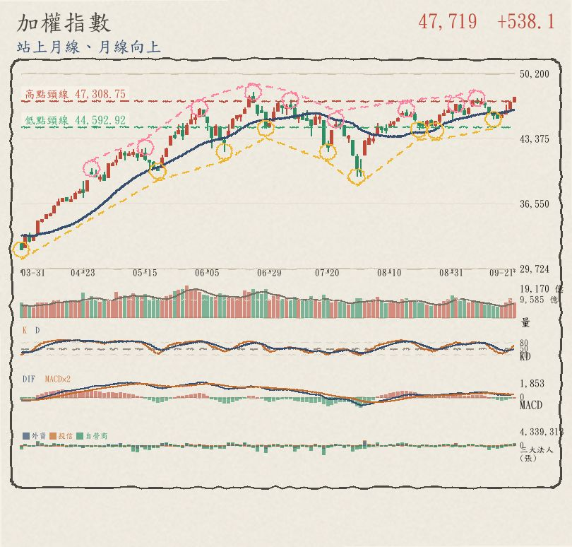
圖說：加權指數日 K（與個股圖相同標記）：黃圈＝轉折低點、粉圈＝轉折高點、虛線小圈＝還沒確認的轉折、藍線＝月線 MA20、水平虛線＝高點／低點頸線。最後一根是資料日當天。
本區塊為公開資料的技術面觀察，不構成投資建議，
不報牌、不預測、不下買賣決策。成交金額為集中市場總成交金額（含 ETF／權證），
與頁首摘要的「上市個股成交金額」口徑不同。標籤是統計，不是評分、也不是推薦。
上市 vs 上櫃（同期快篩）
加權 +1.14% vs 櫃買 -0.03%（方向相反，大小型股背離） → 方向相反（大小型股背離）
（兩個市場分開寫，不合併成一個數字；櫃買為 TPEX 公開資料）
櫃買歷史：TPEX 逐日回補 130 根；來源：櫃買中心 www/zh-tw/indexInfo/sectinx（逐日，官方；OpenAPI tpex_index 只回當月）
（TPEX OpenAPI 只回當月，故逐日回補；歷史不足就不算該條均線並標「資料不足」，不用錯數字）
近 20 個交易日大盤狀態回溯（最新在上）（點開看逐日主狀態／量比／量價象限）
用同一支程式回算最近 20 個交易日（主狀態 S1~S8 與量比 20 皆為當日收盤當時的判定，
不是事後調整）；量比 20 未公布的日子寫「—」。
好條件最多的（前 10）
不好條件最多的（前 10）
好條件（8 項）：站上月線、月線向上、底底高、頭頭高、突破頸線、相對大盤強、外資買超、量價攻擊（收紅＋大量）。
不好條件（8 項）：跌破前低、今日下跌、相對大盤弱、在月線之下、量增下跌（出貨）、外資賣超、月線下彎、收盤跌破前一日低點。
兩邊都是同一組資料（日線結構＋當日收盤量價籌碼）算出來的「符合項目數」，只是方向相反；
條件數不是評分、也不是推薦，不構成投資建議。
上升趨勢：底底高 ＋ 頭頭高（11 上市 10／上櫃 1）
量價攻擊（收紅＋大量）（28 上市 20／上櫃 8）
逐檔分析（70 檔）
高點墊高、底部不穩 成交金額 556.05 億・全榜第 1 名（上市第 1 名）
好條件 7/8：站上月線、月線向上、頭頭高、突破頸線、相對大盤強、外資買超、量價攻擊（收紅＋大量）
不好條件 0/8：無
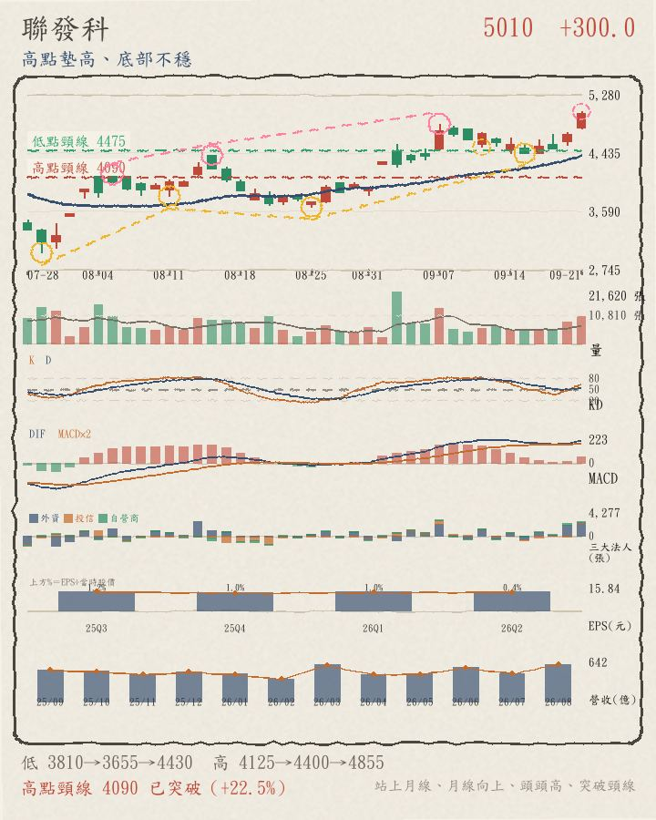
今天帶量收紅、站上月線 4397，已站上高點頸線 4945，高點還在墊高（但底部沒同步墊高）。
- 月線位置：收盤 5010 在月線 4397 之上；5 日線 4636 也在月線之上（短均在上）；月線向上、5 日線走平或向下
- 量能：成交量是 20 日均量的 1.57 倍，比 20 日均量大不少；收紅又量增，量價配合
- 關鍵價位：高點頸線 4945 已站上；最近轉折高點 4855（高於 3.2%）；最近轉折低點 4430（高於 13.1%）
- 轉折結構：高點 4125、4400、4855 墊高 17.7%（頭頭高），但低點 3810、3655、4430 沒有同步墊高；還沒確認的轉折低點 09-10 4520；還沒確認的轉折高點 09-21 5035（圖上虛線小圈）
區間或轉弱 成交金額 397.73 億・全榜第 2 名（上市第 2 名）
好條件 4/8：站上月線、月線向上、突破頸線、外資買超
不好條件 1/8：相對大盤弱
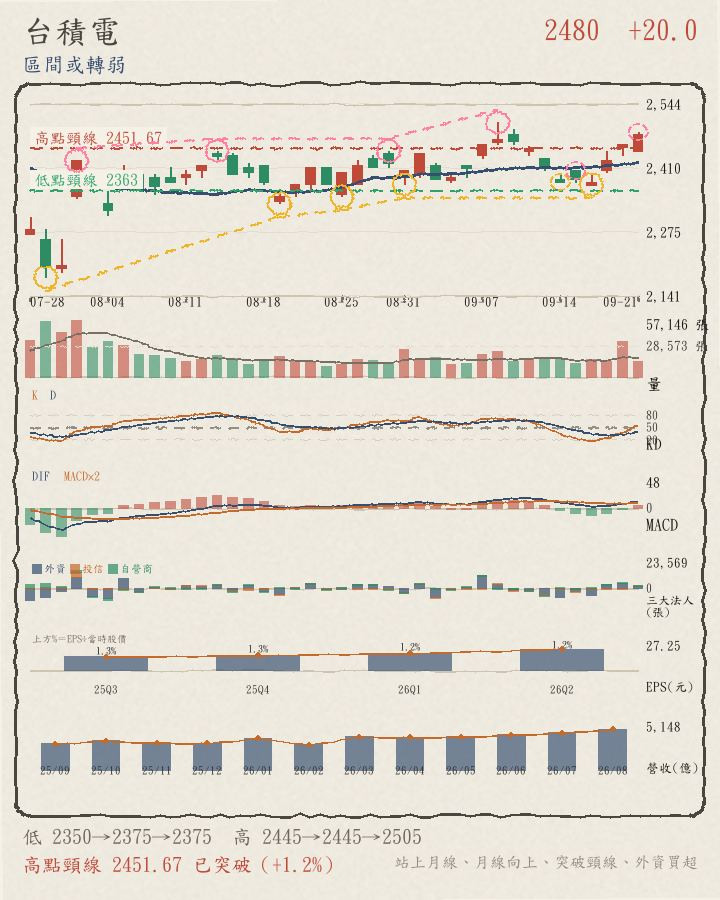
今天收紅、但成交量比平均少、站上月線 2422，已站上高點頸線 2451.67，轉折還沒走出明顯方向。
- 月線位置：收盤 2480 在月線 2422 之上；5 日線 2426 也在月線之上（短均在上）；月線向上、5 日線走平或向下
- 量能：成交量是 20 日均量的 0.88 倍，比 20 日均量少一些；收紅但量縮，量價背離
- 關鍵價位：高點頸線 2451.67 已站上；最近轉折高點 2505（低於 1.0%）；最近轉折低點 2375（高於 4.4%）
- 轉折結構：低點 2350、2375、2375 與高點 2445、2445、2505 都沒有明顯遞增，屬於區間震盪或轉弱；還沒確認的轉折低點 09-14 2380；還沒確認的轉折高點 09-15 2405、09-21 2485（圖上虛線小圈）
區間或轉弱 成交金額 350.44 億・全榜第 3 名（上市第 3 名）
好條件 4/8：站上月線、相對大盤強、外資買超、量價攻擊（收紅＋大量）
不好條件 1/8：月線下彎
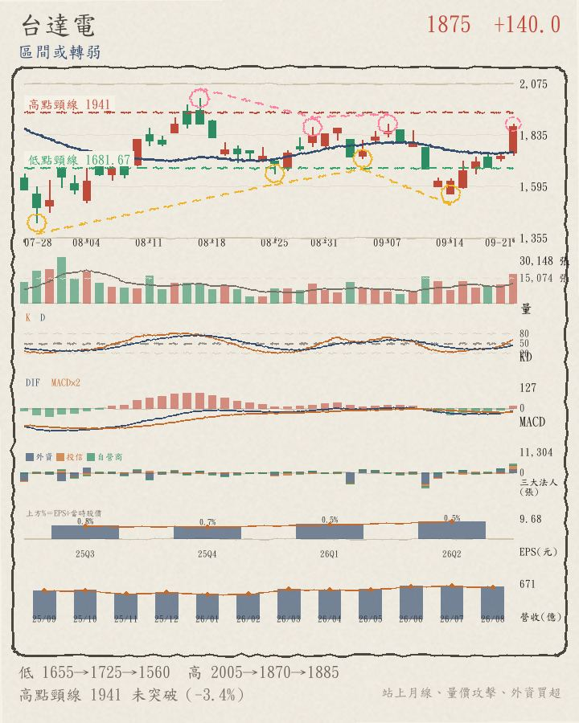
今天帶量收紅、站上月線 1756，離高點頸線 1880 還差 0.3%，轉折還沒走出明顯方向。
- 月線位置：收盤 1875 在月線 1756 之上；5 日線 1735 也在月線之下（短均在下）；月線走平或向下、5 日線向上
- 量能：成交量是 20 日均量的 1.94 倍，比 20 日均量大不少；收紅又量增，量價配合
- 關鍵價位：高點頸線 1880 還沒突破，差 0.3%；最近轉折高點 1885（低於 0.5%）；最近轉折低點 1560（高於 20.2%）
- 轉折結構：低點 1655、1725、1560 與高點 2005、1870、1885 都沒有明顯遞增，屬於區間震盪或轉弱；還沒確認的轉折高點 09-21 1885（圖上虛線小圈）
剛突破前高 成交金額 269.63 億・全榜第 4 名（上市第 4 名）
好條件 7/8：站上月線、月線向上、頭頭高、突破頸線、相對大盤強、外資買超、量價攻擊（收紅＋大量）
不好條件 0/8：無
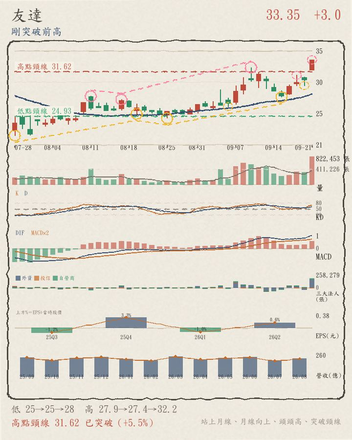
今天帶量收紅、站上月線 28.247，已站上高點頸線 31.62，高點還在墊高（但底部沒同步墊高）。
- 月線位置：收盤 33.35 在月線 28.247 之上；5 日線 30.2 也在月線之上（短均在上）；月線向上、5 日線向上
- 量能：成交量是 20 日均量的 2.90 倍，比 20 日均量大不少；收紅又量增，量價配合
- 關鍵價位：高點頸線 31.62 已站上；最近轉折高點 32.2（高於 3.6%）；最近轉折低點 27.75（高於 20.2%）
- 轉折結構：高點 27.9、27.4、32.2 墊高 3.6%（頭頭高），但低點 25.25、24.6、27.75 沒有同步墊高；還沒確認的轉折低點 09-04 26.35、09-18 29.5；還沒確認的轉折高點 09-17 31.05、09-21 33.35（圖上虛線小圈）
上升趨勢（底底高＋頭頭高） 成交金額 247.27 億・全榜第 5 名（上市第 5 名）
好條件 5/8：站上月線、月線向上、底底高、頭頭高、突破頸線
不好條件 2/8：相對大盤弱、外資賣超
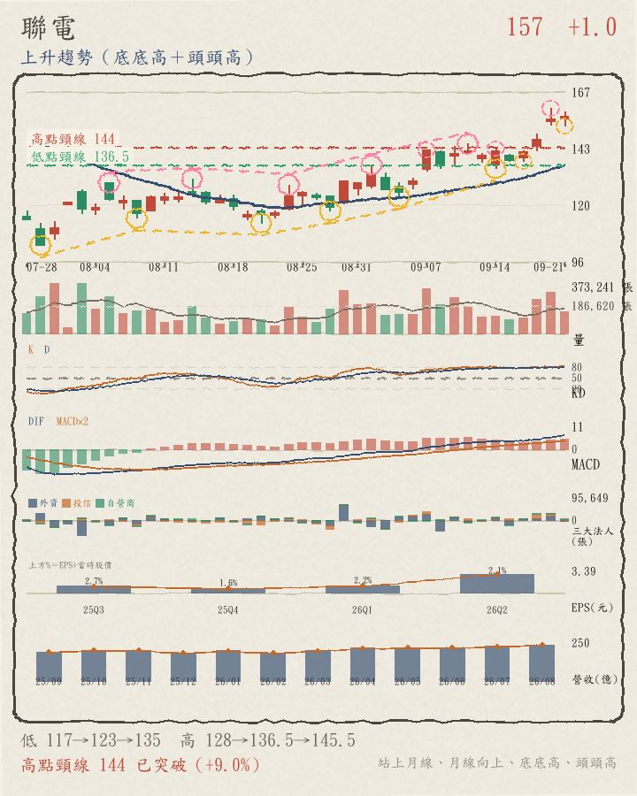
今天收紅、但成交量比平均少、站上月線 136.375，已站上高點頸線 144，轉折結構仍是底底高＋頭頭高。
- 月線位置：收盤 157 在月線 136.375 之上；5 日線 148.2 也在月線之上（短均在上）；月線向上、5 日線向上
- 量能：成交量是 20 日均量的 0.84 倍，比 20 日均量少很多；收紅但量縮，量價背離
- 關鍵價位：高點頸線 144 已站上；最近轉折高點 145.5（高於 7.9%）；最近轉折低點 135（高於 16.3%）
- 轉折結構：低點 117、123、135 一路墊高 15.4%、高點 128、136.5、145.5 也一路墊高 13.7%，是底底高＋頭頭高；還沒確認的轉折低點 09-16 138、09-21 153；還沒確認的轉折高點 09-14 143.5、09-18 160.5（圖上虛線小圈）
上升趨勢（底底高＋頭頭高） 成交金額 235.27 億・全榜第 6 名（上市第 6 名）
好條件 8/8：站上月線、月線向上、底底高、頭頭高、突破頸線、相對大盤強、外資買超、量價攻擊（收紅＋大量）
不好條件 0/8：無
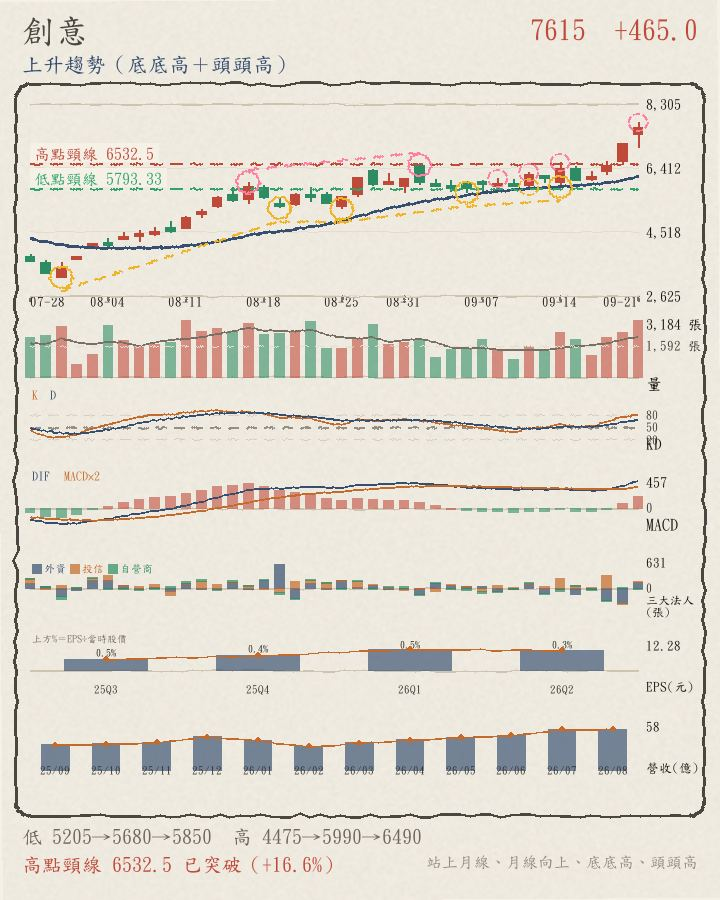
今天帶量收紅、站上月線 6163.25，已站上高點頸線 6532.5，轉折結構仍是底底高＋頭頭高。
- 月線位置：收盤 7615 在月線 6163.25 之上；5 日線 6694 也在月線之上（短均在上）；月線向上、5 日線向上
- 量能：成交量是 20 日均量的 1.75 倍，比 20 日均量大不少；收紅又量增，量價配合
- 關鍵價位：高點頸線 6532.5 已站上；最近轉折高點 6490（高於 17.3%）；最近轉折低點 5850（高於 30.2%）
- 轉折結構：低點 5205、5680、5850 一路墊高 12.4%、高點 4475、5990、6490 也一路墊高 45.0%，是底底高＋頭頭高；還沒確認的轉折低點 09-10 5850；還沒確認的轉折高點 09-14 6575、09-21 7755（圖上虛線小圈）
剛突破前高 成交金額 198.35 億・全榜第 7 名（上市第 7 名）
好條件 1/8：頭頭高
不好條件 6/8：今日下跌、相對大盤弱、在月線之下、量增下跌（出貨）、外資賣超、月線下彎
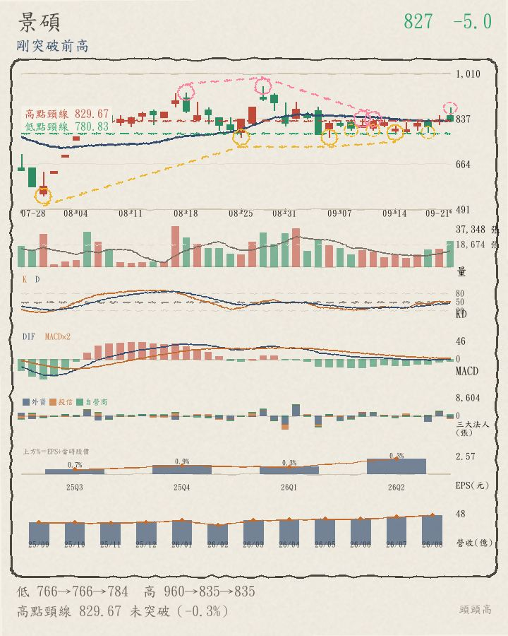
今天帶量收黑、跌破月線 830.7，離高點頸線 829.67 還差 0.3%，高點還在墊高（但底部沒同步墊高）。
- 月線位置：收盤 827 在月線 830.7 之下；5 日線 815.8 也在月線之下（短均在下）；月線走平或向下、5 日線向上
- 量能：成交量是 20 日均量的 1.35 倍，比 20 日均量大不少；收黑卻量增，量價背離
- 關鍵價位：高點頸線 829.67 還沒突破，差 0.3%；最近轉折高點 835（低於 1.0%）；最近轉折低點 784（高於 5.5%）
- 轉折結構：高點 960、835、835 墊高 5.1%（頭頭高），但低點 766、766、784 沒有同步墊高；還沒確認的轉折低點 09-10 792、09-17 785；還沒確認的轉折高點 09-21 878（圖上虛線小圈）
剛突破前高 成交金額 179.39 億・全榜第 8 名（上市第 8 名）
好條件 5/8：站上月線、頭頭高、突破頸線、相對大盤強、外資買超
不好條件 1/8：月線下彎
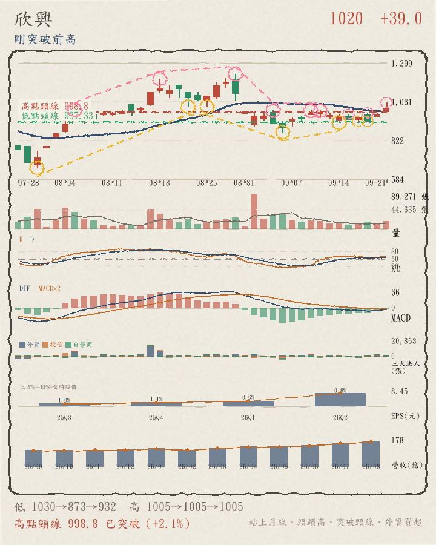
今天收紅、但成交量比平均少、站上月線 1000.15，已站上高點頸線 998.8，高點還在墊高（但底部沒同步墊高）。
- 月線位置：收盤 1020 在月線 1000.15 之上；5 日線 970.6 也在月線之下（短均在下）；月線走平或向下、5 日線走平或向下
- 量能：成交量是 20 日均量的 0.80 倍，比 20 日均量少很多；收紅但量縮，量價背離
- 關鍵價位：高點頸線 998.8 已站上；最近轉折高點 1005（高於 1.5%）；最近轉折低點 932（高於 9.4%）
- 轉折結構：高點 1005、1005、1005 墊高 5.0%（頭頭高），但低點 1030、873、932 沒有同步墊高；還沒確認的轉折低點 09-16 940、09-17 940；還沒確認的轉折高點 09-17 993、09-21 1055（圖上虛線小圈）
區間或轉弱 成交金額 179.14 億・全榜第 9 名（上市第 9 名）
好條件 1/8：站上月線
不好條件 4/8：今日下跌、相對大盤弱、外資賣超、月線下彎
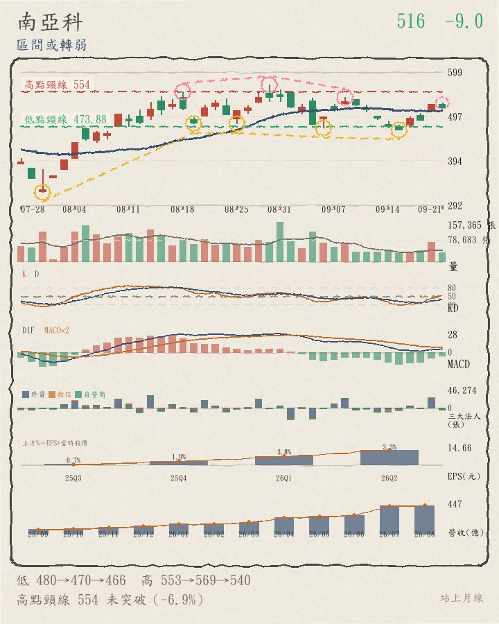
今天收黑、成交量也比平均少、站上月線 509.975，離高點頸線 554 還差 6.9%，轉折還沒走出明顯方向。
- 月線位置：收盤 516 在月線 509.975 之上；5 日線 497.4 也在月線之下（短均在下）；月線走平或向下、5 日線走平或向下
- 量能：成交量是 20 日均量的 0.53 倍，比 20 日均量少很多
- 關鍵價位：高點頸線 554 還沒突破，差 6.9%；最近轉折高點 540（低於 4.4%）；最近轉折低點 465.5（高於 10.8%）
- 轉折結構：低點 480、470、465.5 與高點 553、569、540 都沒有明顯遞增，屬於區間震盪或轉弱；還沒確認的轉折高點 09-21 528（圖上虛線小圈）
剛突破前高 成交金額 169.51 億・全榜第 10 名（上市第 10 名）
好條件 7/8：站上月線、月線向上、頭頭高、突破頸線、相對大盤強、外資買超、量價攻擊（收紅＋大量）
不好條件 0/8：無
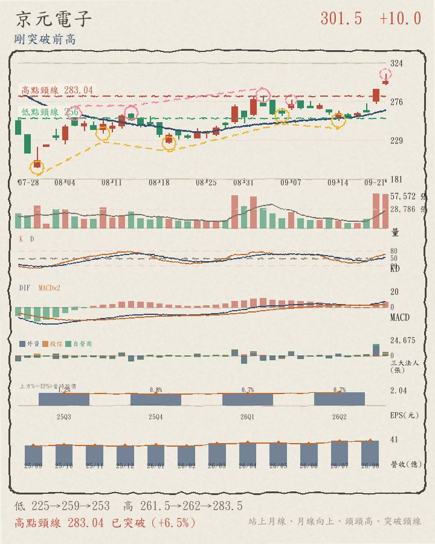
今天帶量收紅、站上月線 265.725，已站上高點頸線 283.04，高點還在墊高（但底部沒同步墊高）。
- 月線位置：收盤 301.5 在月線 265.725 之上；5 日線 275.3 也在月線之上（短均在上）；月線向上、5 日線向上
- 量能：成交量是 20 日均量的 2.52 倍，比 20 日均量大不少；收紅又量增，量價配合
- 關鍵價位：高點頸線 283.04 已站上；最近轉折高點 283.5（高於 6.3%）；最近轉折低點 253（高於 19.2%）
- 轉折結構：高點 261.5、262、283.5 墊高 9.3%（頭頭高），但低點 225、259、253 沒有同步墊高；還沒確認的轉折高點 09-07 278、09-21 310（圖上虛線小圈）
區間或轉弱 成交金額 154.53 億・全榜第 12 名（上市第 11 名）
好條件 3/8：站上月線、相對大盤強、外資買超
不好條件 1/8：月線下彎
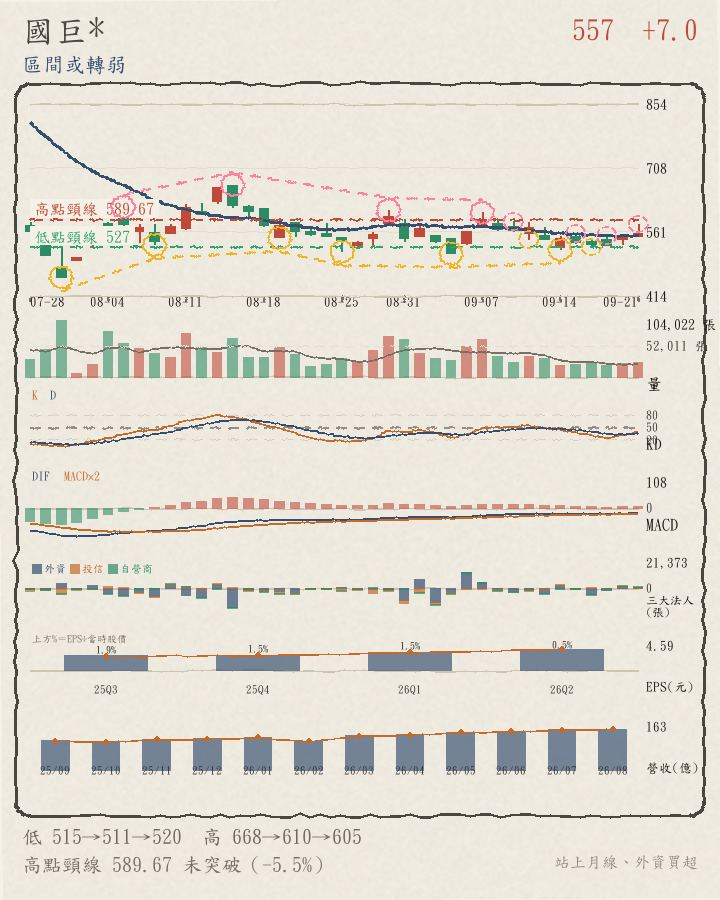
今天收紅、但成交量比平均少、站上月線 552.5，離高點頸線 594.75 還差 6.3%，轉折還沒走出明顯方向。
- 月線位置：收盤 557 在月線 552.5 之上；5 日線 541.8 也在月線之下（短均在下）；月線走平或向下、5 日線走平或向下
- 量能：成交量是 20 日均量的 0.72 倍，比 20 日均量少很多；收紅但量縮，量價背離
- 關鍵價位：高點頸線 594.75 還沒突破，差 6.3%；最近轉折高點 605（低於 7.9%）；最近轉折低點 520（高於 7.1%）
- 轉折結構：低點 515、511、520 與高點 668、610、605 都沒有明顯遞增，屬於區間震盪或轉弱；還沒確認的轉折低點 09-10 543、09-16 526；還沒確認的轉折高點 09-17 553、09-21 579（圖上虛線小圈）
剛突破前高 成交金額 150.4 億・全榜第 13 名（上市第 12 名）
好條件 1/8：頭頭高
不好條件 7/8：今日下跌、相對大盤弱、在月線之下、量增下跌（出貨）、外資賣超、月線下彎、收盤跌破前一日低點
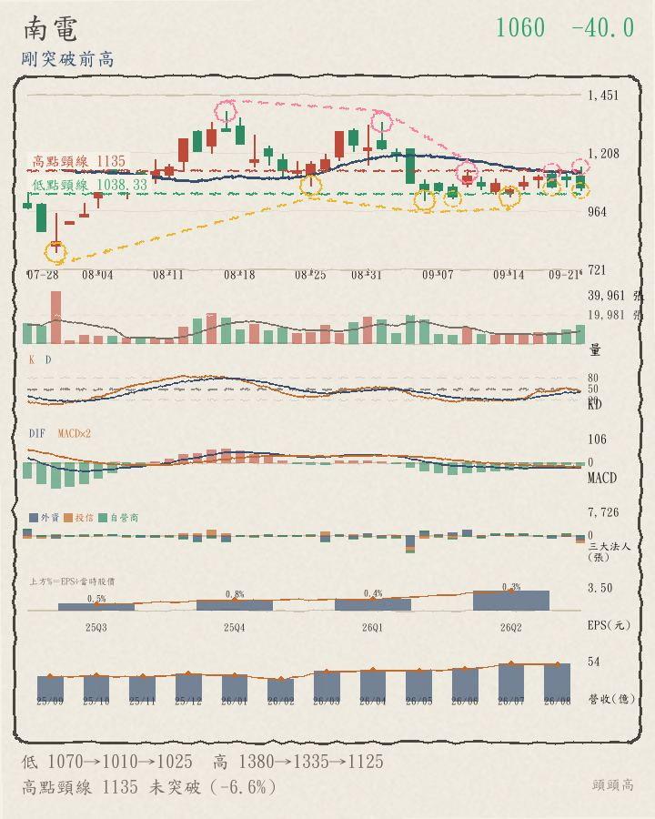
今天帶量收黑、跌破月線 1123.5，離高點頸線 1135 還差 6.6%，高點還在墊高（但底部沒同步墊高）。
- 月線位置：收盤 1060 在月線 1123.5 之下；5 日線 1083 也在月線之下（短均在下）；月線走平或向下、5 日線向上
- 量能：成交量是 20 日均量的 1.29 倍，比 20 日均量大不少；收黑卻量增，量價背離
- 關鍵價位：高點頸線 1135 還沒突破，差 6.6%；最近轉折高點 1125（低於 5.8%）；最近轉折低點 1025（高於 3.4%）
- 轉折結構：高點 1380、1335、1125 墊高 2.2%（頭頭高），但低點 1070、1010、1025 沒有同步墊高；還沒確認的轉折低點 09-17 1060、09-21 1050；還沒確認的轉折高點 09-17 1130、09-21 1150（圖上虛線小圈）
區間或轉弱 成交金額 143.08 億・全榜第 14 名（上市第 13 名）
好條件 5/8：站上月線、月線向上、相對大盤強、外資買超、量價攻擊（收紅＋大量）
不好條件 0/8：無
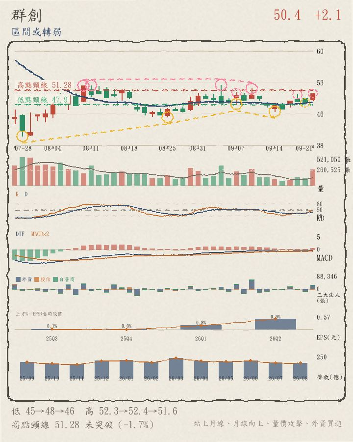
今天帶量收紅、站上月線 48.452，離高點頸線 51.28 還差 1.7%，轉折還沒走出明顯方向。
- 月線位置：收盤 50.4 在月線 48.452 之上；5 日線 48.53 也在月線之上（短均在上）；月線向上、5 日線走平或向下
- 量能：成交量是 20 日均量的 1.64 倍，比 20 日均量大不少；收紅又量增，量價配合
- 關鍵價位：高點頸線 51.28 還沒突破，差 1.7%；最近轉折高點 51.6（低於 2.3%）；最近轉折低點 46.25（高於 9.0%）
- 轉折結構：低點 44.95、48、46.25 與高點 52.3、52.4、51.6 都沒有明顯遞增，屬於區間震盪或轉弱；還沒確認的轉折低點 09-18 48.25；還沒確認的轉折高點 09-17 50.2、09-21 50.5（圖上虛線小圈）
區間或轉弱 成交金額 134.69 億・全榜第 15 名（上市第 14 名）
好條件 0/8：無
不好條件 5/8：今日下跌、相對大盤弱、在月線之下、外資賣超、月線下彎
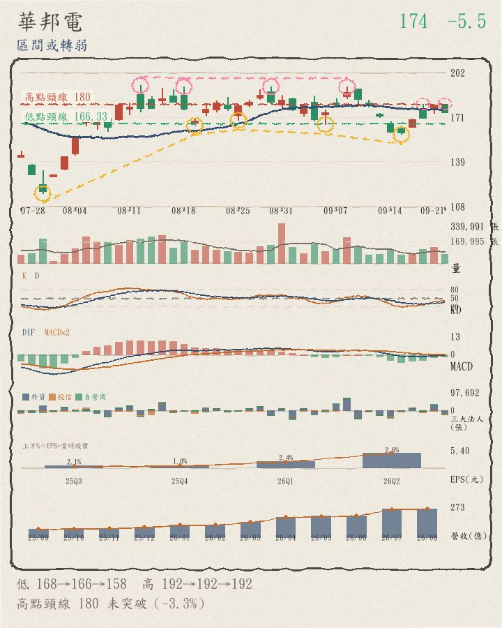
今天收黑、成交量也比平均少、跌破月線 176.125，離高點頸線 180 還差 3.3%，轉折還沒走出明顯方向。
- 月線位置：收盤 174 在月線 176.125 之下；5 日線 170.4 也在月線之下（短均在下）；月線走平或向下、5 日線走平或向下
- 量能：成交量是 20 日均量的 0.61 倍，比 20 日均量少很多
- 關鍵價位：高點頸線 180 還沒突破，差 3.3%；最近轉折高點 192（低於 9.4%）；最近轉折低點 158.5（高於 9.8%）
- 轉折結構：低點 168.5、165.5、158.5 與高點 192、192、192 都沒有明顯遞增，屬於區間震盪或轉弱；還沒確認的轉折高點 09-17 180、09-21 180（圖上虛線小圈）
高點墊高、底部不穩 成交金額 134.22 億・全榜第 16 名（上市第 15 名）
好條件 2/8：月線向上、頭頭高
不好條件 4/8：今日下跌、相對大盤弱、在月線之下、外資賣超
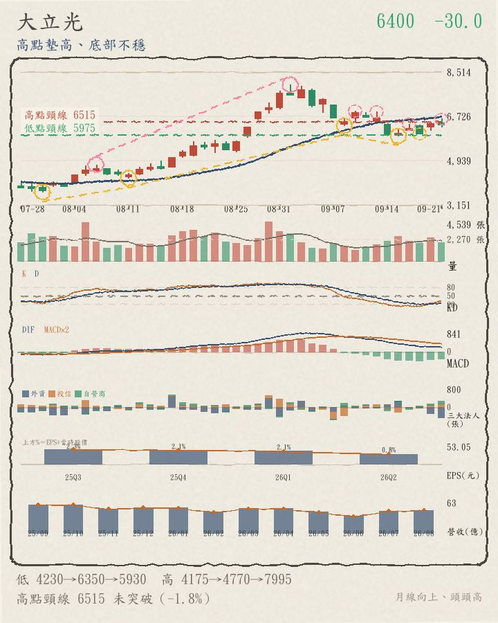
今天收黑、成交量也比平均少、跌破月線 6705.75，離高點頸線 6515 還差 1.8%，高點還在墊高（但底部沒同步墊高）。
- 月線位置：收盤 6400 在月線 6705.75 之下；5 日線 6226 也在月線之下（短均在下）；月線向上、5 日線走平或向下
- 量能：成交量是 20 日均量的 0.92 倍，比 20 日均量少一些
- 關鍵價位：高點頸線 6515 還沒突破，差 1.8%；最近轉折高點 7995（低於 19.9%）；最近轉折低點 5930（高於 7.9%）
- 轉折結構：高點 4175、4770、7995 墊高 91.5%（頭頭高），但低點 4230、6350、5930 沒有同步墊高；還沒確認的轉折低點 09-17 6020；還沒確認的轉折高點 09-16 6415、09-21 6615（圖上虛線小圈）
上升趨勢（底底高＋頭頭高） 成交金額 125.82 億・全榜第 17 名（上市第 16 名）
好條件 3/8：月線向上、底底高、頭頭高
不好條件 5/8：今日下跌、相對大盤弱、在月線之下、外資賣超、收盤跌破前一日低點
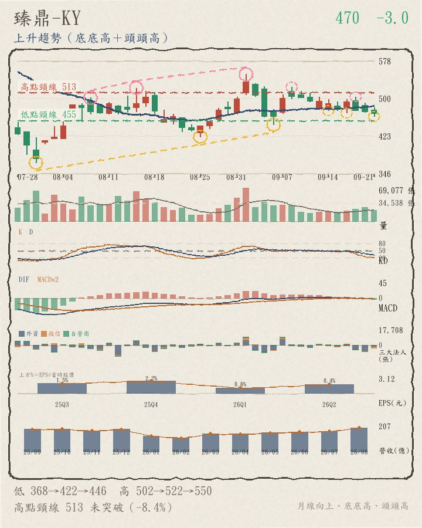
今天收黑、成交量也比平均少、跌破月線 485.025，離高點頸線 513 還差 8.4%，轉折結構仍是底底高＋頭頭高。
- 月線位置：收盤 470 在月線 485.025 之下；5 日線 478 也在月線之下（短均在下）；月線向上、5 日線走平或向下
- 量能：成交量是 20 日均量的 0.83 倍，比 20 日均量少很多
- 關鍵價位：高點頸線 513 還沒突破，差 8.4%；最近轉折高點 550（低於 14.5%）；最近轉折低點 446.5（高於 5.3%）
- 轉折結構：低點 368、421.5、446.5 一路墊高 21.3%、高點 502、522、550 也一路墊高 9.6%，是底底高＋頭頭高；還沒確認的轉折低點 09-16 471、09-21 463.5；還沒確認的轉折高點 09-08 524、09-17 504（圖上虛線小圈）
底部墊高、未過前高 成交金額 121.14 億・全榜第 18 名（上市第 17 名）
好條件 4/8：站上月線、月線向上、底底高、外資買超
不好條件 1/8：相對大盤弱
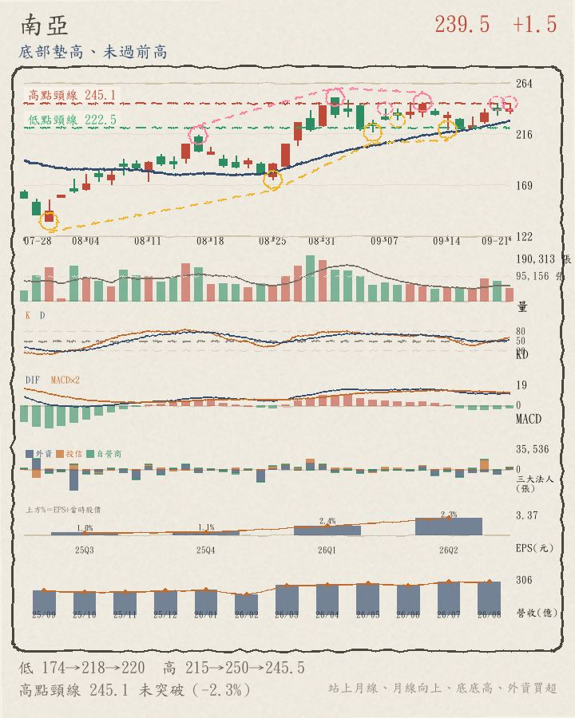
今天收紅、但成交量比平均少、站上月線 228.9，離高點頸線 245.1 還差 2.3%，底部還在墊高（但高點沒同步創高）。
- 月線位置：收盤 239.5 在月線 228.9 之上；5 日線 231.8 也在月線之上（短均在上）；月線向上、5 日線走平或向下
- 量能：成交量是 20 日均量的 0.56 倍，比 20 日均量少很多；收紅但量縮，量價背離
- 關鍵價位：高點頸線 245.1 還沒突破，差 2.3%；最近轉折高點 245.5（低於 2.4%）；最近轉折低點 220.5（高於 8.6%）
- 轉折結構：低點 174、218、220.5 墊高 26.7%（底底高），但高點 215、250、245.5 沒有同步創高；還沒確認的轉折低點 09-08 229；還沒確認的轉折高點 09-18 245、09-21 245（圖上虛線小圈）
區間或轉弱 成交金額 116.55 億・全榜第 19 名（上市第 18 名）
好條件 2/8：外資買超、量價攻擊（收紅＋大量）
不好條件 4/8：跌破前低、相對大盤弱、在月線之下、月線下彎
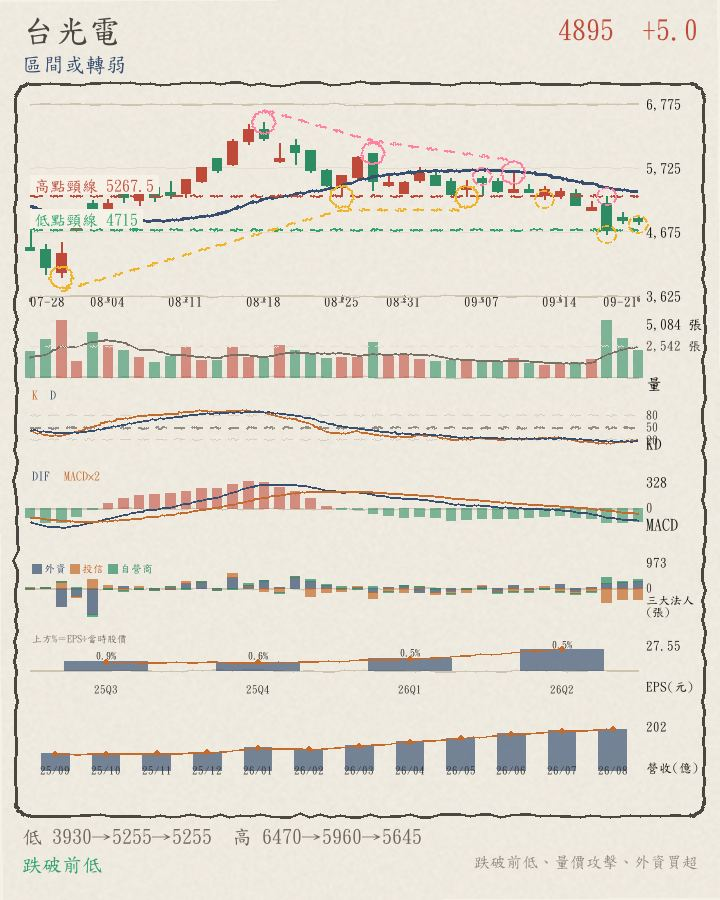
今天帶量收紅、跌破月線 5336.5，跌破前一個轉折低點（高點頸線 5267.5 還在收盤上方），轉折還沒走出明顯方向。
- 月線位置：收盤 4895 在月線 5336.5 之下；5 日線 4936 也在月線之下（短均在下）；月線走平或向下、5 日線走平或向下
- 量能：成交量是 20 日均量的 1.29 倍，比 20 日均量大不少；收紅又量增，量價配合
- 關鍵價位：高點頸線 5267.5 還沒突破、還在收盤上方 7.1%；最近轉折高點 5645（低於 13.3%）；最近轉折低點 5255（低於 6.9%）
- 轉折結構：低點 3930、5255、5255 與高點 6470、5960、5645 都沒有明顯遞增，屬於區間震盪或轉弱；還沒確認的轉折低點 09-17 4635、09-21 4795；還沒確認的轉折高點 09-07 5580、09-17 5255（圖上虛線小圈）
底部墊高、突破前高 成交金額 113.29 億・全榜第 21 名（上市第 19 名）
好條件 8/8：站上月線、月線向上、底底高、頭頭高、突破頸線、相對大盤強、外資買超、量價攻擊（收紅＋大量）
不好條件 0/8：無
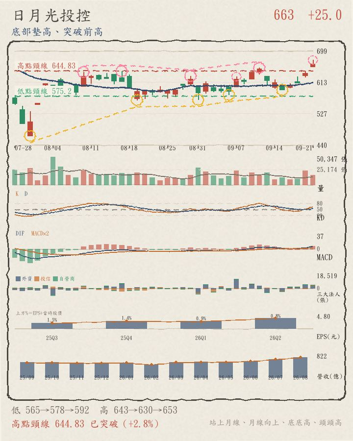
今天帶量收紅、站上月線 612，已站上高點頸線 639，轉折結構仍是底底高＋頭頭高。
- 月線位置：收盤 663 在月線 612 之上；5 日線 622.4 也在月線之上（短均在上）；月線向上、5 日線走平或向下
- 量能：成交量是 20 日均量的 1.06 倍，比 20 日均量大一些；收紅又量增，量價配合
- 關鍵價位：高點頸線 639 已站上；最近轉折高點 653（高於 1.5%）；最近轉折低點 592（高於 12.0%）
- 轉折結構：低點 565、578、592 一路墊高 4.8%、高點 643、630、653 也一路墊高 3.2%，是底底高＋頭頭高；還沒確認的轉折高點 09-07 628、09-21 674（圖上虛線小圈）
區間或轉弱 成交金額 105.92 億・全榜第 22 名（上市第 20 名）
好條件 0/8：無
不好條件 7/8：今日下跌、相對大盤弱、在月線之下、量增下跌（出貨）、外資賣超、月線下彎、收盤跌破前一日低點
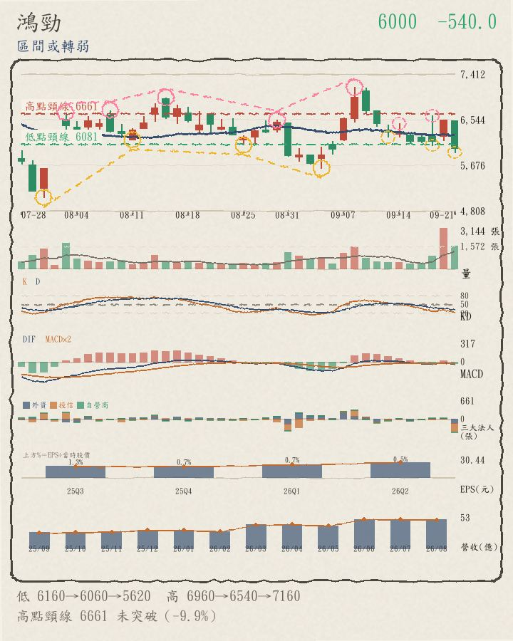
今天帶量收黑、跌破月線 6247.5，離高點頸線 6765 還差 11.3%，轉折還沒走出明顯方向。
- 月線位置：收盤 6000 在月線 6247.5 之下；5 日線 6187 也在月線之下（短均在下）；月線走平或向下、5 日線走平或向下
- 量能：成交量是 20 日均量的 2.15 倍，比 20 日均量大不少；收黑卻量增，量價背離
- 關鍵價位：高點頸線 6765 還沒突破，差 11.3%；最近轉折高點 7160（低於 16.2%）；最近轉折低點 5620（高於 6.8%）
- 轉折結構：低點 6160、6060、5620 與高點 6960、6540、7160 都沒有明顯遞增，屬於區間震盪或轉弱；還沒確認的轉折低點 09-17 6055、09-21 5920；還沒確認的轉折高點 09-14 6470、09-17 6615（圖上虛線小圈）
區間或轉弱 成交金額 102.15 億・全榜第 23 名（上市第 21 名）
好條件 3/8：站上月線、相對大盤強、量價攻擊（收紅＋大量）
不好條件 2/8：外資賣超、月線下彎
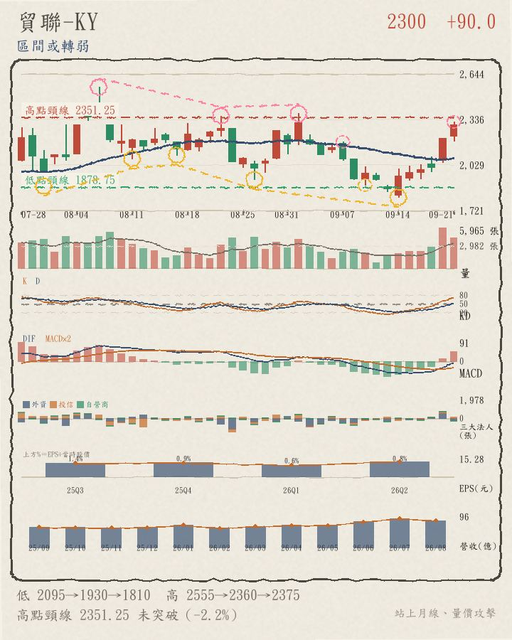
今天帶量收紅、站上月線 2076.5，離高點頸線 2351.25 還差 2.2%，轉折還沒走出明顯方向。
- 月線位置：收盤 2300 在月線 2076.5 之上；5 日線 2099 也在月線之上（短均在上）；月線走平或向下、5 日線向上
- 量能：成交量是 20 日均量的 1.54 倍，比 20 日均量大不少；收紅又量增，量價配合
- 關鍵價位：高點頸線 2351.25 還沒突破，差 2.2%；最近轉折高點 2375（低於 3.2%）；最近轉折低點 1810（高於 27.1%）
- 轉折結構：低點 2095、1930、1810 與高點 2555、2360、2375 都沒有明顯遞增，屬於區間震盪或轉弱；還沒確認的轉折低點 09-09 1890；還沒確認的轉折高點 09-07 2185、09-21 2320（圖上虛線小圈）
區間或轉弱 成交金額 94.9 億・全榜第 24 名（上市第 22 名）
好條件 4/8：站上月線、月線向上、相對大盤強、外資買超
不好條件 0/8：無
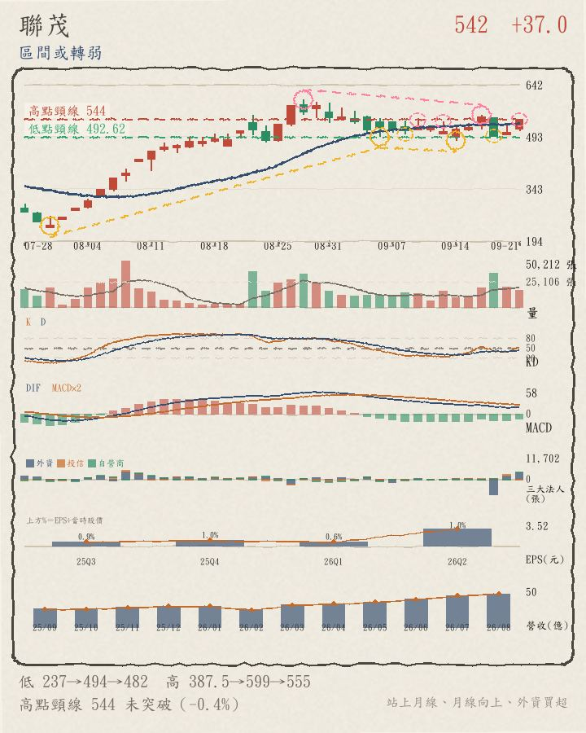
今天收紅、站上月線 531.05，離高點頸線 544 還差 0.4%，轉折還沒走出明顯方向。
- 月線位置：收盤 542 在月線 531.05 之上；5 日線 522.2 也在月線之下（短均在下）；月線向上、5 日線向上
- 量能：成交量是 20 日均量的 0.97 倍，跟 20 日均量差不多
- 關鍵價位：高點頸線 544 還沒突破，差 0.4%；最近轉折高點 555（低於 2.3%）；最近轉折低點 482（高於 12.4%）
- 轉折結構：低點 237、493.5、482 與高點 387.5、599、555 都沒有明顯遞增，屬於區間震盪或轉弱；還沒確認的轉折低點 09-08 500、09-17 495；還沒確認的轉折高點 09-11 537、09-21 542（圖上虛線小圈）
上升趨勢（底底高＋頭頭高） 成交金額 91.08 億・全榜第 27 名（上市第 23 名）
好條件 7/8：站上月線、月線向上、底底高、頭頭高、相對大盤強、外資買超、量價攻擊（收紅＋大量）
不好條件 0/8：無
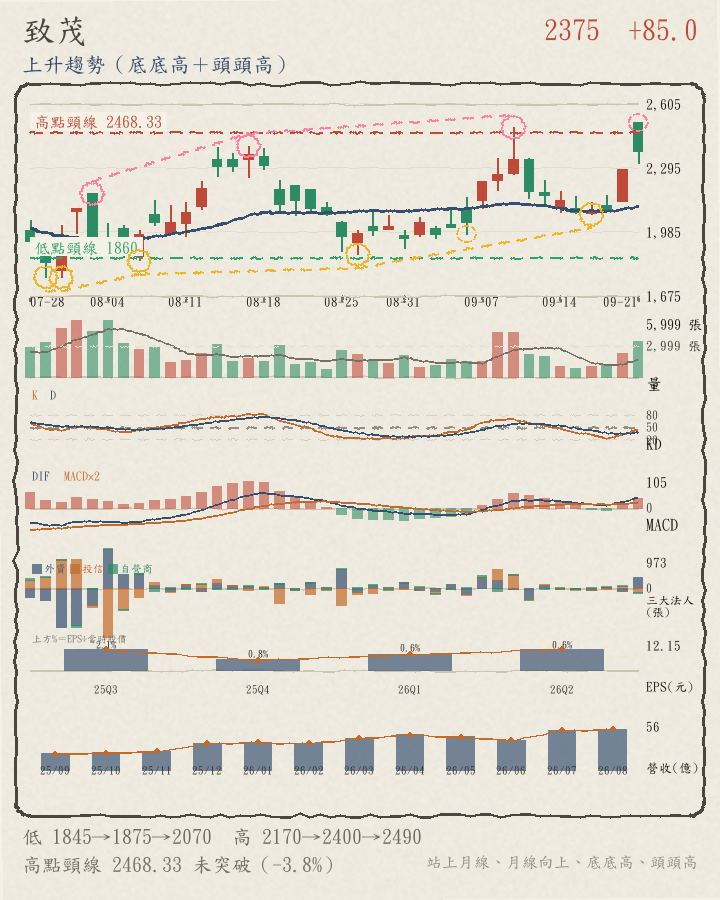
今天帶量收紅、站上月線 2109.25，離高點頸線 2468.33 還差 3.8%，轉折結構仍是底底高＋頭頭高。
- 月線位置：收盤 2375 在月線 2109.25 之上；5 日線 2184 也在月線之上（短均在上）；月線向上、5 日線走平或向下
- 量能：成交量是 20 日均量的 1.91 倍，比 20 日均量大不少；收紅又量增，量價配合
- 關鍵價位：高點頸線 2468.33 還沒突破，差 3.8%；最近轉折高點 2490（低於 4.6%）；最近轉折低點 2070（高於 14.7%）
- 轉折結構：低點 1845、1875、2070 一路墊高 12.2%、高點 2170、2400、2490 也一路墊高 14.7%，是底底高＋頭頭高；還沒確認的轉折低點 09-04 1975；還沒確認的轉折高點 09-21 2515（圖上虛線小圈）
剛突破前高 成交金額 88.86 億・全榜第 29 名（上市第 24 名）
好條件 6/8：站上月線、月線向上、頭頭高、突破頸線、相對大盤強、量價攻擊（收紅＋大量）
不好條件 1/8：外資賣超
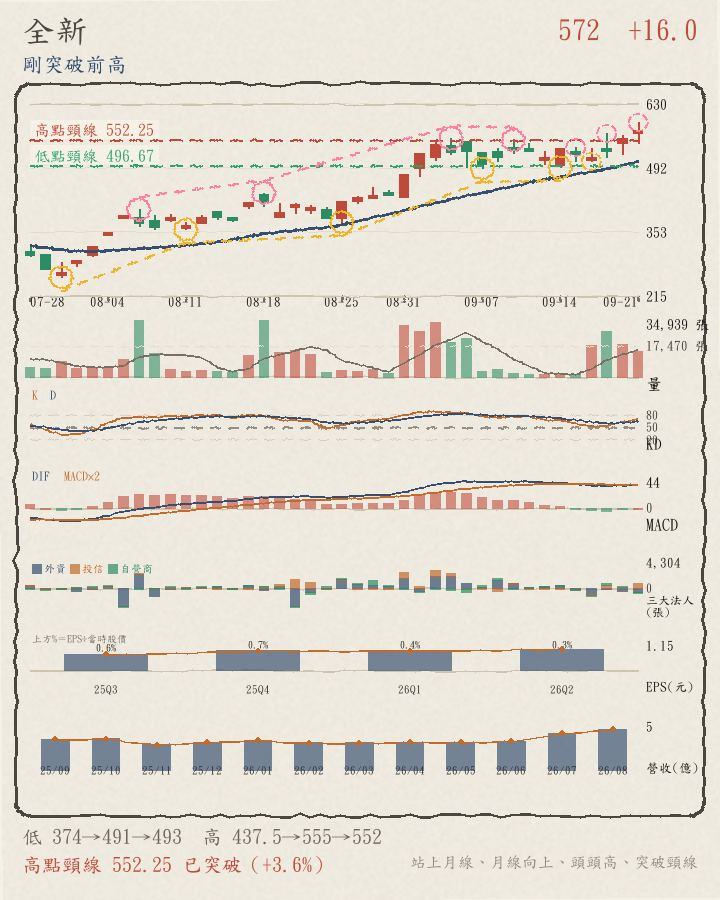
今天帶量收紅、站上月線 506.875，已站上高點頸線 552.25，高點還在墊高（但底部沒同步墊高）。
- 月線位置：收盤 572 在月線 506.875 之上；5 日線 539.4 也在月線之上（短均在上）；月線向上、5 日線向上
- 量能：成交量是 20 日均量的 1.31 倍，比 20 日均量大不少；收紅又量增，量價配合
- 關鍵價位：高點頸線 552.25 已站上；最近轉折高點 552（高於 3.6%）；最近轉折低點 493（高於 16.0%）
- 轉折結構：高點 437.5、555、552 墊高 6.9%（頭頭高），但低點 374.5、491、493 沒有同步墊高；還沒確認的轉折低點 09-16 506；還沒確認的轉折高點 09-17 566、09-21 590（圖上虛線小圈）
高點墊高、底部不穩 成交金額 83.59 億・全榜第 30 名（上市第 25 名）
好條件 1/8：頭頭高
不好條件 8/8：跌破前低、今日下跌、相對大盤弱、在月線之下、量增下跌（出貨）、外資賣超、月線下彎、收盤跌破前一日低點
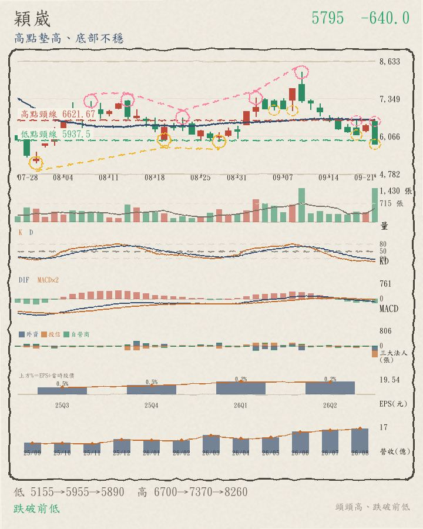
今天帶量收黑、跌破月線 6624.5，跌破前一個轉折低點（高點頸線 6621.67 還在收盤上方），高點還在墊高（但底部沒同步墊高）。
- 月線位置：收盤 5795 在月線 6624.5 之下；5 日線 6174 也在月線之下（短均在下）；月線走平或向下、5 日線走平或向下
- 量能：成交量是 20 日均量的 2.89 倍，比 20 日均量大不少；收黑卻量增，量價背離
- 關鍵價位：高點頸線 6621.67 還沒突破、還在收盤上方 12.5%；最近轉折高點 8260（低於 29.8%）；最近轉折低點 5890（低於 1.6%）
- 轉折結構：高點 6700、7370、8260 墊高 23.3%（頭頭高），但低點 5155、5955、5890 沒有同步墊高；還沒確認的轉折低點 09-17 6110、09-21 5795；還沒確認的轉折高點 09-17 6595、09-21 6570（圖上虛線小圈）
剛突破前高 成交金額 81.06 億・全榜第 31 名（上市第 26 名）
好條件 6/8：站上月線、月線向上、頭頭高、相對大盤強、外資買超、量價攻擊（收紅＋大量）
不好條件 0/8：無
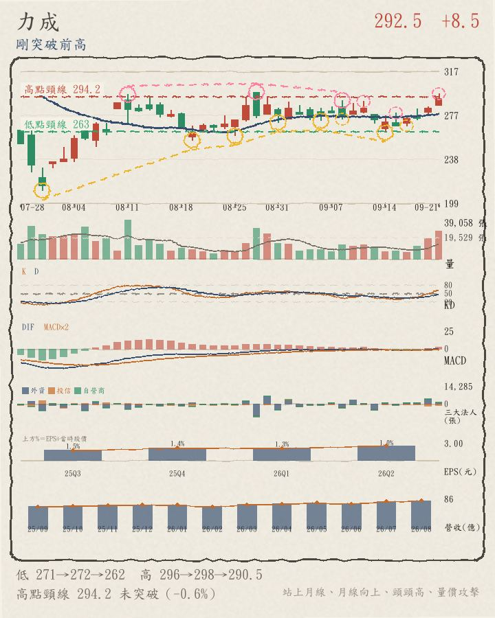
今天帶量收紅、站上月線 278.6，離高點頸線 294.2 還差 0.6%，高點還在墊高（但底部沒同步墊高）。
- 月線位置：收盤 292.5 在月線 278.6 之上；5 日線 278.7 也在月線之上（短均在上）；月線向上、5 日線向上
- 量能：成交量是 20 日均量的 2.15 倍，比 20 日均量大不少；收紅又量增，量價配合
- 關鍵價位：高點頸線 294.2 還沒突破，差 0.6%；最近轉折高點 290.5（高於 0.7%）；最近轉折低點 262（高於 11.6%）
- 轉折結構：高點 296、298、290.5 墊高 2.1%（頭頭高），但低點 271、272.5、262 沒有同步墊高；還沒確認的轉折低點 09-08 274、09-16 268；還沒確認的轉折高點 09-15 279.5、09-21 296.5（圖上虛線小圈）
底部墊高、突破前高 成交金額 80.83 億・全榜第 32 名（上市第 27 名）
好條件 7/8：站上月線、月線向上、底底高、頭頭高、突破頸線、相對大盤強、量價攻擊（收紅＋大量）
不好條件 1/8：外資賣超
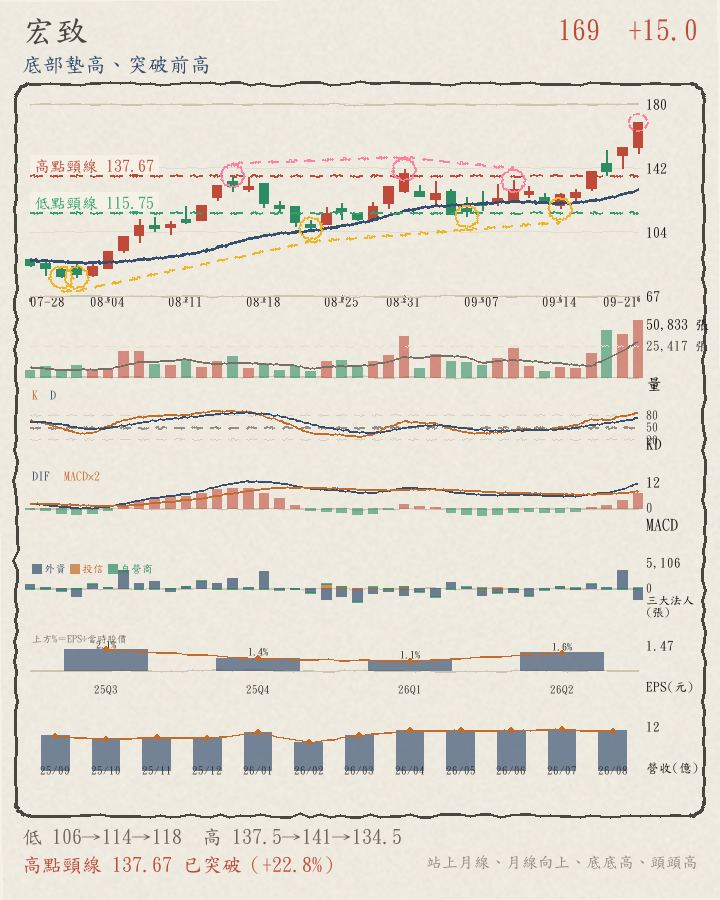
今天帶量收紅、站上月線 129.225，已站上高點頸線 137.67，轉折結構仍是底底高＋頭頭高。
- 月線位置：收盤 169 在月線 129.225 之上；5 日線 146.1 也在月線之上（短均在上）；月線向上、5 日線向上
- 量能：成交量是 20 日均量的 2.96 倍，比 20 日均量大不少；收紅又量增，量價配合
- 關鍵價位：高點頸線 137.67 已站上；最近轉折高點 134.5（高於 25.7%）；最近轉折低點 118（高於 43.2%）
- 轉折結構：低點 106.5、113.5、118 一路墊高 10.8%、高點 137.5、141、134.5 也一路墊高 25.7%，是底底高＋頭頭高；還沒確認的轉折高點 09-21 169（圖上虛線小圈）
底部墊高、未過前高 成交金額 75.27 億・全榜第 34 名（上市第 28 名）
好條件 2/8：底底高、相對大盤強
不好條件 3/8：在月線之下、外資賣超、月線下彎
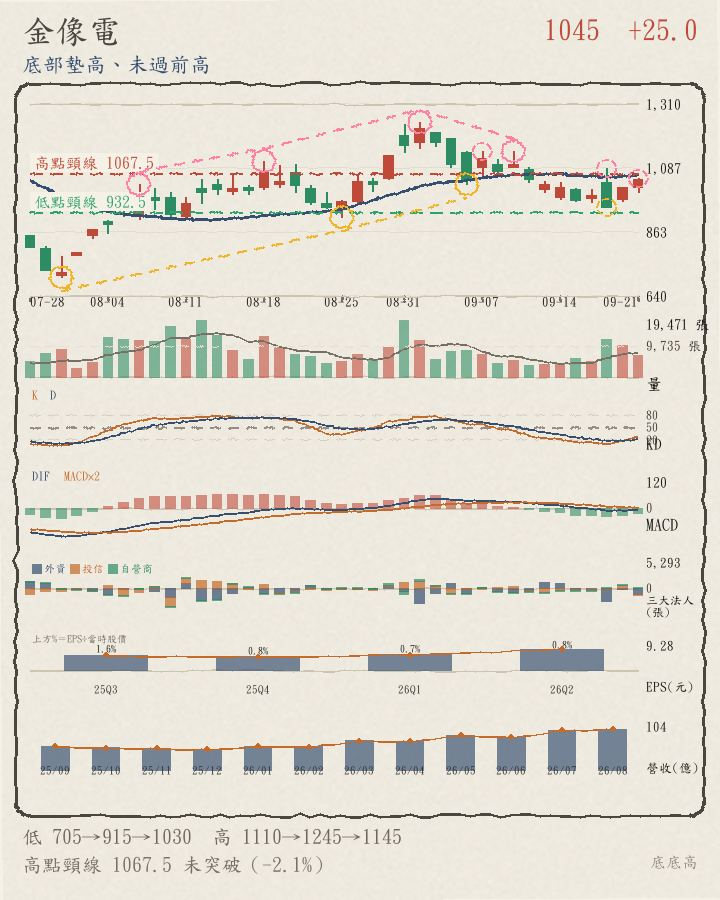
今天收紅、但成交量比平均少、跌破月線 1062.5，離高點頸線 1067.5 還差 2.1%，底部還在墊高（但高點沒同步創高）。
- 月線位置：收盤 1045 在月線 1062.5 之下；5 日線 995.8 也在月線之下（短均在下）；月線走平或向下、5 日線走平或向下
- 量能：成交量是 20 日均量的 0.94 倍，比 20 日均量少一些；收紅但量縮，量價背離
- 關鍵價位：高點頸線 1067.5 還沒突破，差 2.1%；最近轉折高點 1145（低於 8.7%）；最近轉折低點 1030（高於 1.5%）
- 轉折結構：低點 705、915、1030 墊高 46.1%（底底高），但高點 1110、1245、1145 沒有同步創高；還沒確認的轉折低點 09-17 950；還沒確認的轉折高點 09-17 1085、09-21 1050（圖上虛線小圈）
底部墊高、未過前高 成交金額 72.19 億・全榜第 37 名（上市第 29 名）
好條件 3/8：站上月線、月線向上、底底高
不好條件 3/8：今日下跌、相對大盤弱、外資賣超
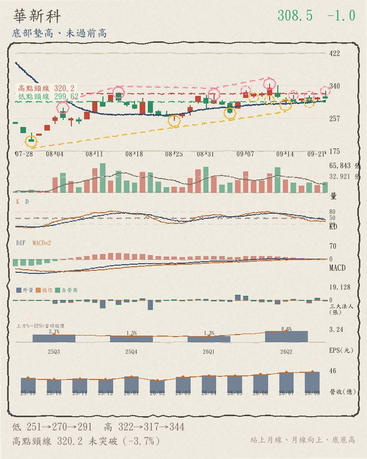
今天收黑、成交量也比平均少、站上月線 301.55，離高點頸線 320.2 還差 3.7%，底部還在墊高（但高點沒同步創高）。
- 月線位置：收盤 308.5 在月線 301.55 之上；5 日線 304.5 也在月線之上（短均在上）；月線向上、5 日線走平或向下
- 量能：成交量是 20 日均量的 0.80 倍，比 20 日均量少很多
- 關鍵價位：高點頸線 320.2 還沒突破，差 3.7%；最近轉折高點 344（低於 10.3%）；最近轉折低點 291（高於 6.0%）
- 轉折結構：低點 251、270、291 墊高 15.9%（底底高），但高點 322、317、344 沒有同步創高；還沒確認的轉折低點 09-10 303、09-17 295；還沒確認的轉折高點 09-17 314.5、09-21 326（圖上虛線小圈）
上升趨勢（底底高＋頭頭高） 成交金額 70.78 億・全榜第 38 名（上市第 30 名）
好條件 4/8：月線向上、底底高、頭頭高、外資買超
不好條件 2/8：相對大盤弱、在月線之下
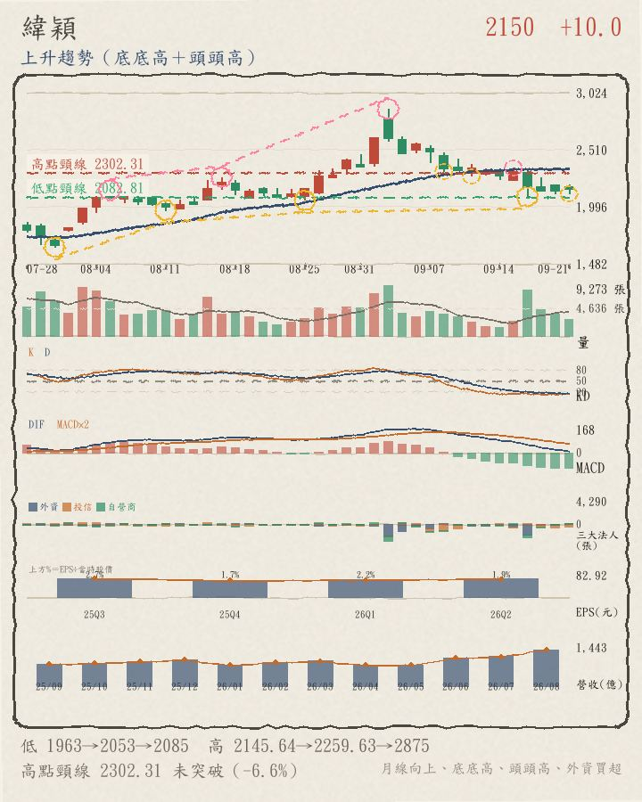
今天收紅、但成交量比平均少、跌破月線 2338.05，離高點頸線 2302.31 還差 6.6%，轉折結構仍是底底高＋頭頭高。
- 月線位置：收盤 2150 在月線 2338.05 之下；5 日線 2181 也在月線之下（短均在下）；月線向上、5 日線走平或向下
- 量能：成交量是 20 日均量的 0.70 倍，比 20 日均量少很多；收紅但量縮，量價背離
- 關鍵價位：高點頸線 2302.31 還沒突破，差 6.6%；最近轉折高點 2875（低於 25.2%）；最近轉折低點 2085（高於 3.1%）
- 轉折結構：低點 1962.92、2053.44、2085 一路墊高 6.2%、高點 2145.64、2259.63、2875 也一路墊高 34.0%，是底底高＋頭頭高；還沒確認的轉折低點 09-10 2270、09-21 2110；還沒確認的轉折高點 09-15 2345（圖上虛線小圈）
高點墊高、底部不穩 成交金額 70.36 億・全榜第 39 名（上市第 31 名）
好條件 2/8：月線向上、頭頭高
不好條件 6/8：今日下跌、相對大盤弱、在月線之下、量增下跌（出貨）、外資賣超、收盤跌破前一日低點
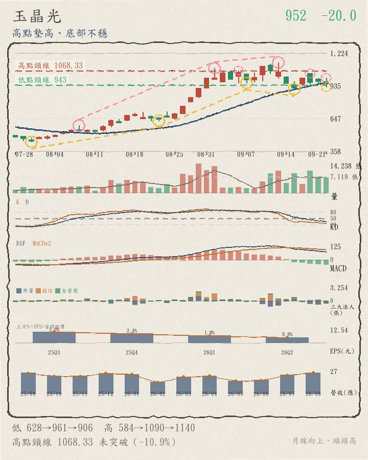
今天帶量收黑、跌破月線 965.3，離高點頸線 1068.33 還差 10.9%，高點還在墊高（但底部沒同步墊高）。
- 月線位置：收盤 952 在月線 965.3 之下；5 日線 961.8 也在月線之下（短均在下）；月線向上、5 日線走平或向下
- 量能：成交量是 20 日均量的 1.08 倍，比 20 日均量大一些；收黑卻量增，量價背離
- 關鍵價位：高點頸線 1068.33 還沒突破，差 10.9%；最近轉折高點 1140（低於 16.5%）；最近轉折低點 906（高於 5.1%）
- 轉折結構：高點 584、1090、1140 墊高 95.2%（頭頭高），但低點 628、961、906 沒有同步墊高；還沒確認的轉折低點 09-21 925；還沒確認的轉折高點 09-17 1045、09-21 1005（圖上虛線小圈）
剛突破前高 成交金額 70.18 億・全榜第 40 名（上市第 32 名）
好條件 7/8：站上月線、月線向上、頭頭高、突破頸線、相對大盤強、外資買超、量價攻擊（收紅＋大量）
不好條件 0/8：無
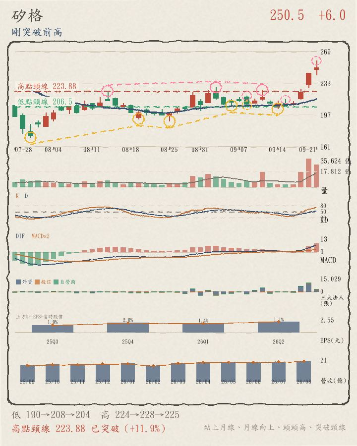
今天帶量收紅、站上月線 215.05，已站上高點頸線 223.88，高點還在墊高（但底部沒同步墊高）。
- 月線位置：收盤 250.5 在月線 215.05 之上；5 日線 227 也在月線之上（短均在上）；月線向上、5 日線向上
- 量能：成交量是 20 日均量的 2.99 倍，比 20 日均量大不少；收紅又量增，量價配合
- 關鍵價位：高點頸線 223.88 已站上；最近轉折高點 225（高於 11.3%）；最近轉折低點 204（高於 22.8%）
- 轉折結構：高點 224、228、225 墊高 14.9%（頭頭高），但低點 190、207.5、204 沒有同步墊高；還沒確認的轉折低點 09-08 208；還沒確認的轉折高點 09-15 214.5、09-21 258.5（圖上虛線小圈）
區間或轉弱 成交金額 69.77 億・全榜第 41 名（上市第 33 名）
好條件 2/8：相對大盤強、量價攻擊（收紅＋大量）
不好條件 3/8：在月線之下、外資賣超、月線下彎
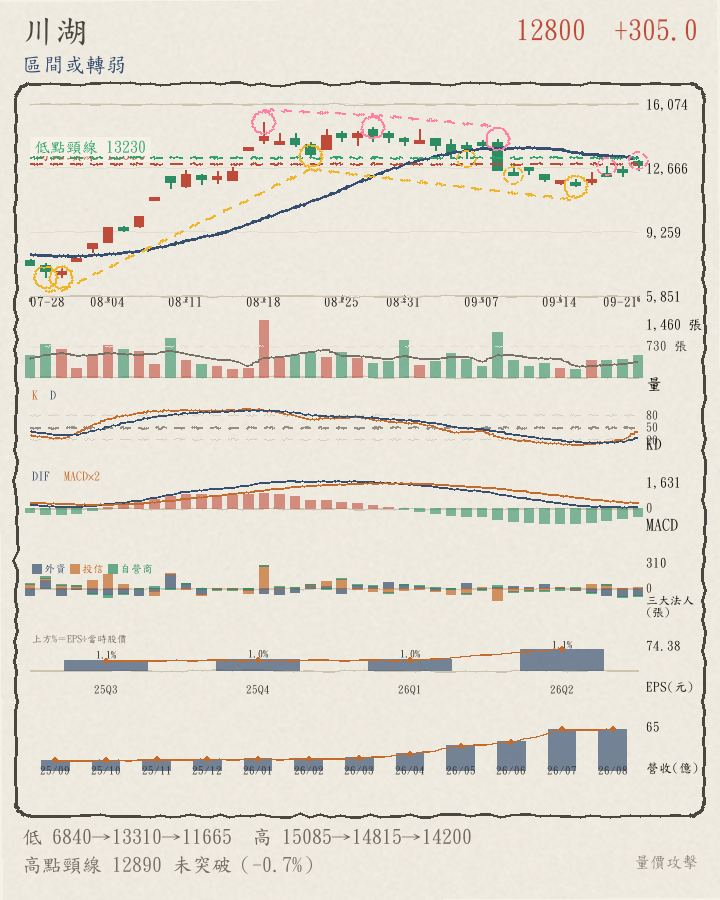
今天帶量收紅、跌破月線 13189.2，離高點頸線 12890 還差 0.7%，轉折還沒走出明顯方向。
- 月線位置：收盤 12800 在月線 13189.2 之下；5 日線 12270 也在月線之下（短均在下）；月線走平或向下、5 日線走平或向下
- 量能：成交量是 20 日均量的 1.19 倍，比 20 日均量大不少；收紅又量增，量價配合
- 關鍵價位：高點頸線 12890 還沒突破，差 0.7%；最近轉折高點 14200（低於 9.9%）；最近轉折低點 11665（高於 9.7%）
- 轉折結構：低點 6840、13310、11665 與高點 15085、14815、14200 都沒有明顯遞增，屬於區間震盪或轉弱；還沒確認的轉折低點 09-04 13150、09-09 12285；還沒確認的轉折高點 09-17 12730、09-21 13050（圖上虛線小圈）
高點墊高、底部不穩 成交金額 68.45 億・全榜第 42 名（上市第 34 名）
好條件 3/8：站上月線、月線向上、頭頭高
不好條件 3/8：今日下跌、相對大盤弱、外資賣超
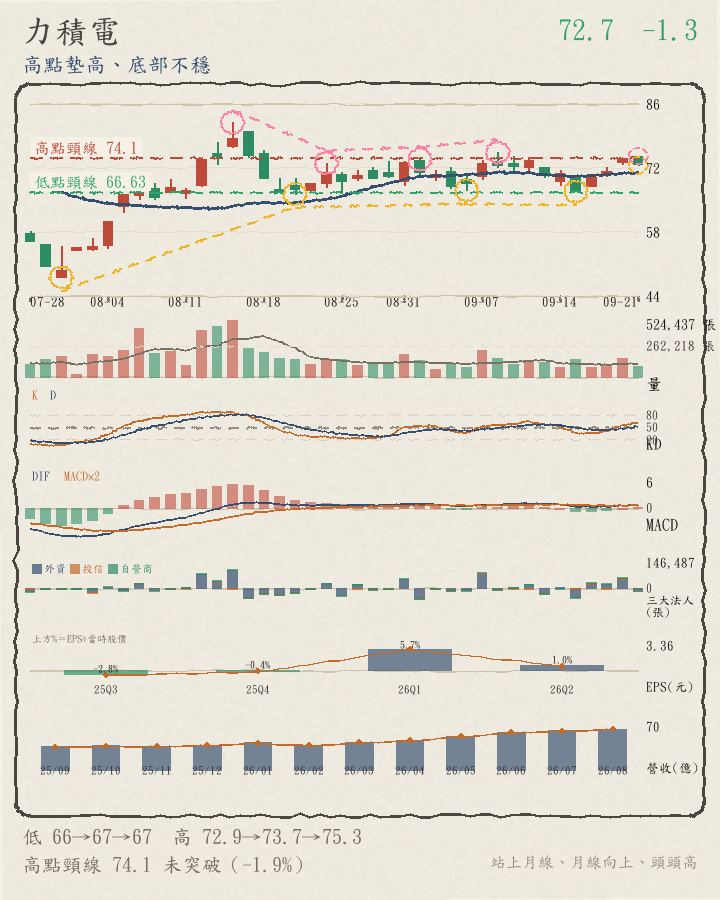
今天收黑、成交量也比平均少、站上月線 70.83，離高點頸線 74.1 還差 1.9%，高點還在墊高（但底部沒同步墊高）。
- 月線位置：收盤 72.7 在月線 70.83 之上；5 日線 70.94 也在月線之上（短均在上）；月線向上、5 日線走平或向下
- 量能：成交量是 20 日均量的 0.68 倍，比 20 日均量少很多
- 關鍵價位：高點頸線 74.1 還沒突破，差 1.9%；最近轉折高點 75.3（低於 3.5%）；最近轉折低點 66.7（高於 9.0%）
- 轉折結構：高點 72.9、73.7、75.3 墊高 3.3%（頭頭高），但低點 66.2、67、66.7 沒有同步墊高；還沒確認的轉折低點 09-21 72.5；還沒確認的轉折高點 09-21 74.5（圖上虛線小圈）
上升趨勢（底底高＋頭頭高） 成交金額 67.91 億・全榜第 43 名（上市第 35 名）
好條件 4/8：站上月線、月線向上、底底高、頭頭高
不好條件 3/8：今日下跌、相對大盤弱、外資賣超
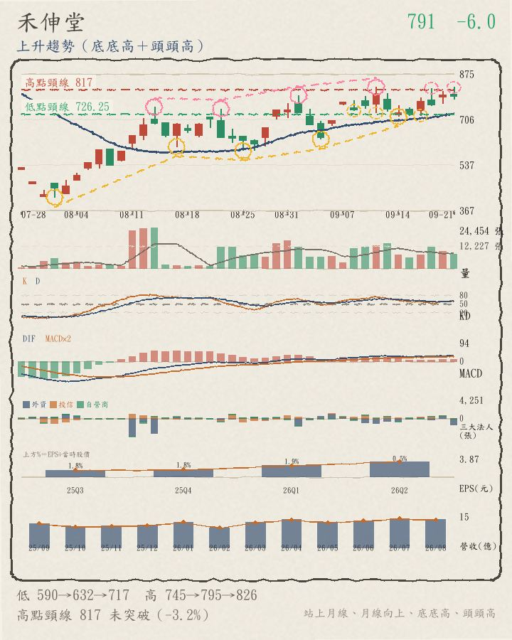
今天收黑、成交量也比平均少、站上月線 727.85，離高點頸線 817 還差 3.2%，轉折結構仍是底底高＋頭頭高。
- 月線位置：收盤 791 在月線 727.85 之上；5 日線 769.2 也在月線之上（短均在上）；月線向上、5 日線向上
- 量能：成交量是 20 日均量的 0.85 倍，比 20 日均量少一些
- 關鍵價位：高點頸線 817 還沒突破，差 3.2%；最近轉折高點 826（低於 4.2%）；最近轉折低點 717（高於 10.3%）
- 轉折結構：低點 590、632、717 一路墊高 21.5%、高點 745、795、826 也一路墊高 10.9%，是底底高＋頭頭高；還沒確認的轉折低點 09-10 730、09-16 720；還沒確認的轉折高點 09-17 822、09-21 825（圖上虛線小圈）
區間或轉弱 成交金額 64.39 億・全榜第 44 名（上市第 36 名）
好條件 1/8：外資買超
不好條件 6/8：跌破前低、今日下跌、相對大盤弱、在月線之下、量增下跌（出貨）、月線下彎
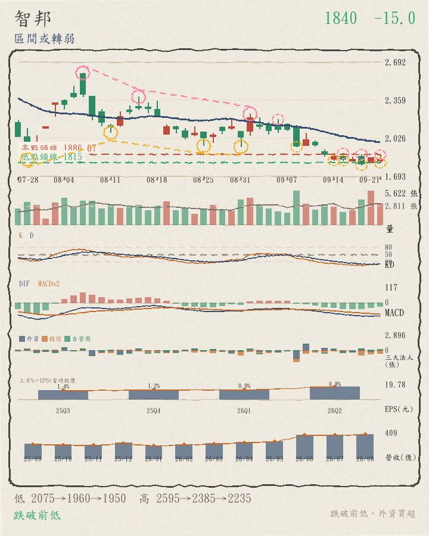
今天帶量收黑、跌破月線 1992，跌破前一個轉折低點（高點頸線 1886.67 還在收盤上方），轉折還沒走出明顯方向。
- 月線位置：收盤 1840 在月線 1992 之下；5 日線 1835 也在月線之下（短均在下）；月線走平或向下、5 日線走平或向下
- 量能：成交量是 20 日均量的 1.12 倍，比 20 日均量大一些；收黑卻量增，量價背離
- 關鍵價位：高點頸線 1886.67 還沒突破、還在收盤上方 2.5%；最近轉折高點 2235（低於 17.7%）；最近轉折低點 1950（低於 5.6%）
- 轉折結構：低點 2075、1960、1950 與高點 2595、2385、2235 都沒有明顯遞增，屬於區間震盪或轉弱；還沒確認的轉折低點 09-17 1790、09-21 1810；還沒確認的轉折高點 09-17 1885、09-21 1880（圖上虛線小圈）
剛突破前高 成交金額 64.21 億・全榜第 45 名（上市第 37 名）
好條件 7/8：站上月線、月線向上、頭頭高、突破頸線、相對大盤強、外資買超、量價攻擊（收紅＋大量）
不好條件 0/8：無
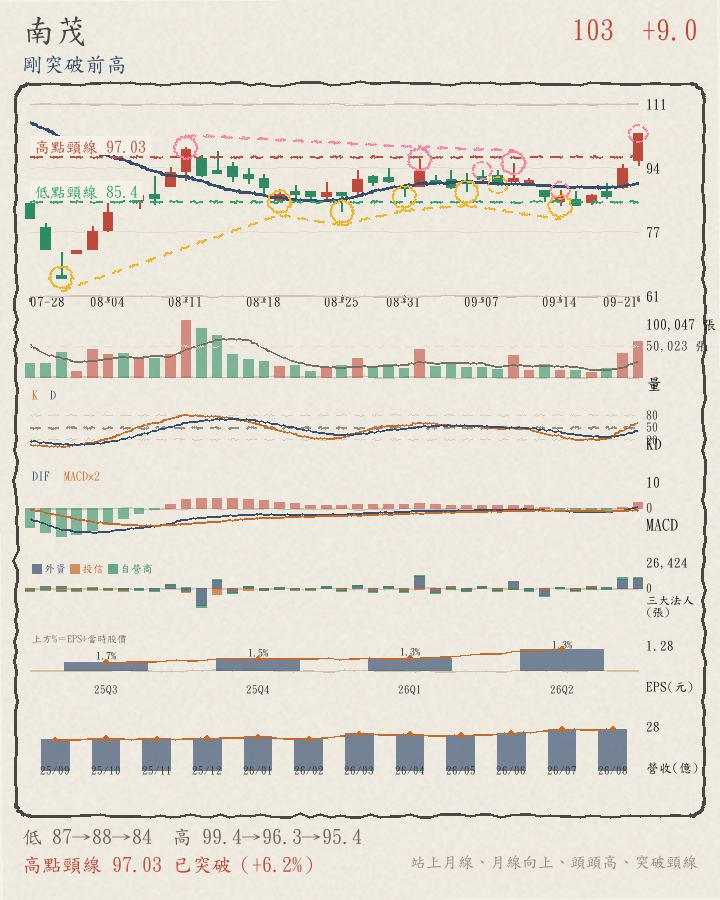
今天帶量收紅、站上月線 90.18，已站上高點頸線 97.03，高點還在墊高（但底部沒同步墊高）。
- 月線位置：收盤 103 在月線 90.18 之上；5 日線 91.04 也在月線之上（短均在上）；月線向上、5 日線向上
- 量能：成交量是 20 日均量的 3.03 倍，比 20 日均量大不少；收紅又量增，量價配合
- 關鍵價位：高點頸線 97.03 已站上；最近轉折高點 95.4（高於 8.0%）；最近轉折低點 84.3（高於 22.2%）
- 轉折結構：高點 99.4、96.3、95.4 墊高 8.0%（頭頭高），但低點 86.6、87.9、84.3 沒有同步墊高；還沒確認的轉折低點 09-08 89.7；還沒確認的轉折高點 09-14 88.2、09-21 103（圖上虛線小圈）
世芯-KY 3661 上市
3665 +125.0
區間或轉弱 成交金額 63.92 億・全榜第 46 名（上市第 38 名）
好條件 1/8：相對大盤強
不好條件 3/8：在月線之下、外資賣超、月線下彎
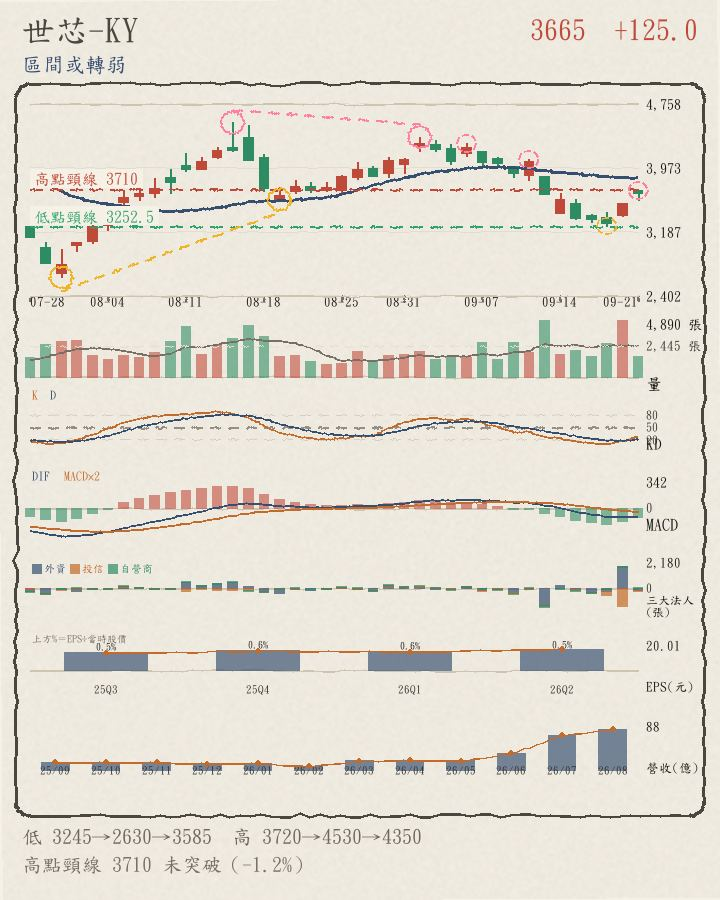
今天收紅、但成交量比平均少、跌破月線 3852.5，離高點頸線 3710 還差 1.2%，轉折還沒走出明顯方向。
- 月線位置：收盤 3665 在月線 3852.5 之下；5 日線 3440 也在月線之下（短均在下）；月線走平或向下、5 日線走平或向下
- 量能：成交量是 20 日均量的 0.78 倍，比 20 日均量少很多；收紅但量縮，量價背離
- 關鍵價位：高點頸線 3710 還沒突破，差 1.2%；最近轉折高點 4350（低於 15.7%）；最近轉折低點 3585（高於 2.2%）
- 轉折結構：低點 3245、2630、3585 與高點 3720、4530、4350 都沒有明顯遞增，屬於區間震盪或轉弱；還沒確認的轉折低點 09-17 3260；還沒確認的轉折高點 09-10 4075、09-21 3700（圖上虛線小圈）
高點墊高、底部不穩 成交金額 59.72 億・全榜第 48 名（上市第 39 名）
好條件 3/8：站上月線、月線向上、頭頭高
不好條件 3/8：今日下跌、相對大盤弱、外資賣超
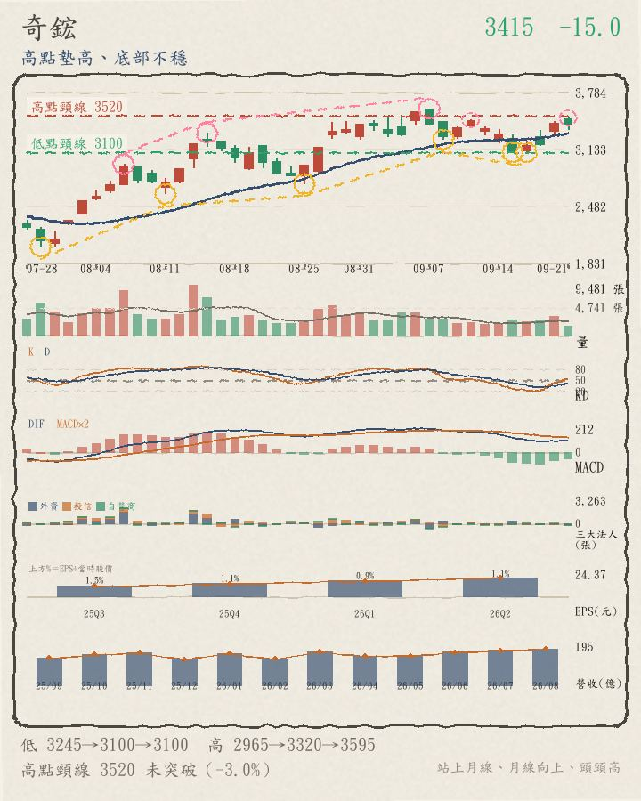
今天收黑、成交量也比平均少、站上月線 3318.25，離高點頸線 3520 還差 3.0%，高點還在墊高（但底部沒同步墊高）。
- 月線位置：收盤 3415 在月線 3318.25 之上；5 日線 3264 也在月線之下（短均在下）；月線向上、5 日線走平或向下
- 量能：成交量是 20 日均量的 0.54 倍，比 20 日均量少很多
- 關鍵價位：高點頸線 3520 還沒突破，差 3.0%；最近轉折高點 3595（低於 5.0%）；最近轉折低點 3100（高於 10.2%）
- 轉折結構：高點 2965、3320、3595 墊高 21.2%（頭頭高），但低點 3245、3100、3100 沒有同步墊高；還沒確認的轉折高點 09-10 3470、09-21 3495（圖上虛線小圈）
剛突破前高 成交金額 58.77 億・全榜第 49 名（上市第 40 名）
好條件 5/8：站上月線、月線向上、頭頭高、相對大盤強、量價攻擊（收紅＋大量）
不好條件 1/8：外資賣超
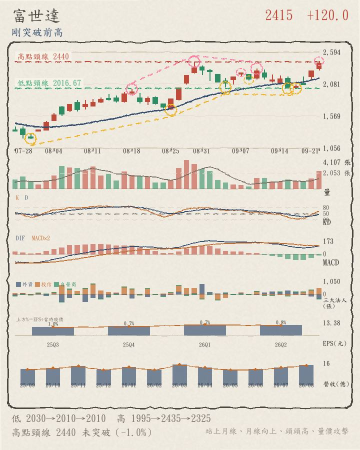
今天帶量收紅、站上月線 2176.25，離高點頸線 2440 還差 1.0%，高點還在墊高（但底部沒同步墊高）。
- 月線位置：收盤 2415 在月線 2176.25 之上；5 日線 2174 也在月線之下（短均在下）；月線向上、5 日線走平或向下
- 量能：成交量是 20 日均量的 1.62 倍，比 20 日均量大不少；收紅又量增，量價配合
- 關鍵價位：高點頸線 2440 還沒突破，差 1.0%；最近轉折高點 2325（高於 3.9%）；最近轉折低點 2010（高於 20.1%）
- 轉折結構：高點 1995、2435、2325 墊高 5.2%（頭頭高），但低點 2030、2010、2010 沒有同步墊高；還沒確認的轉折低點 09-08 2145；還沒確認的轉折高點 09-07 2265、09-21 2445（圖上虛線小圈）
區間或轉弱 成交金額 56.41 億・全榜第 51 名（上市第 41 名）
好條件 4/8：站上月線、月線向上、相對大盤強、外資買超
不好條件 0/8：無
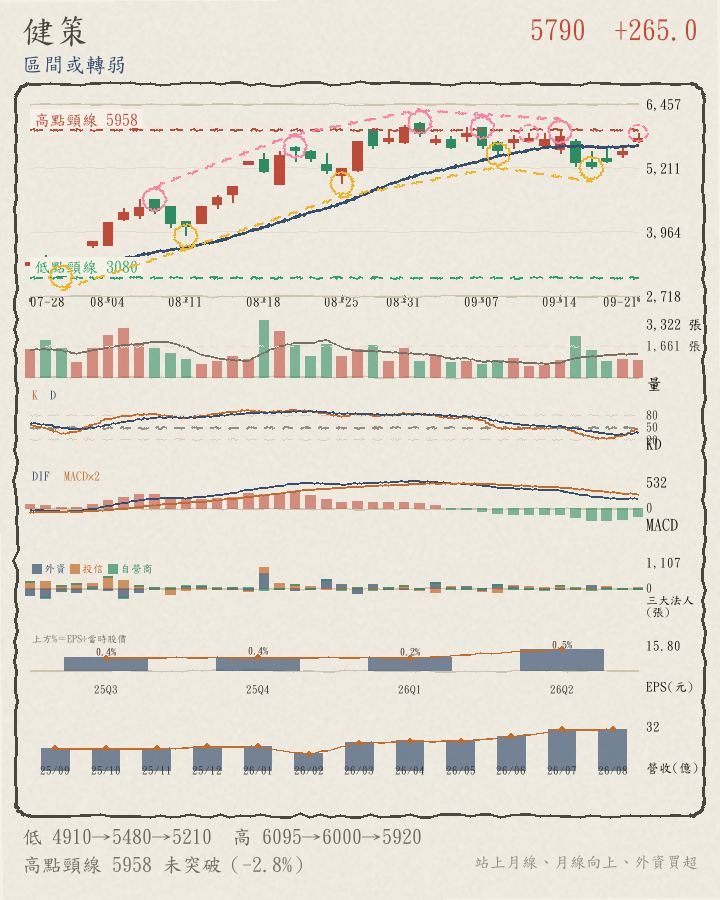
今天收紅、但成交量比平均少、站上月線 5652.75，離高點頸線 5958 還差 2.8%，轉折還沒走出明顯方向。
- 月線位置：收盤 5790 在月線 5652.75 之上；5 日線 5444 也在月線之下（短均在下）；月線向上、5 日線走平或向下
- 量能：成交量是 20 日均量的 0.82 倍，比 20 日均量少很多；收紅但量縮，量價背離
- 關鍵價位：高點頸線 5958 還沒突破，差 2.8%；最近轉折高點 5920（低於 2.2%）；最近轉折低點 5210（高於 11.1%）
- 轉折結構：低點 4910、5480、5210 與高點 6095、6000、5920 都沒有明顯遞增，屬於區間震盪或轉弱；還沒確認的轉折高點 09-10 5885、09-21 5890（圖上虛線小圈）
底部墊高、未過前高 成交金額 50.49 億・全榜第 54 名（上市第 42 名）
好條件 2/8：月線向上、底底高
不好條件 4/8：今日下跌、相對大盤弱、在月線之下、外資賣超
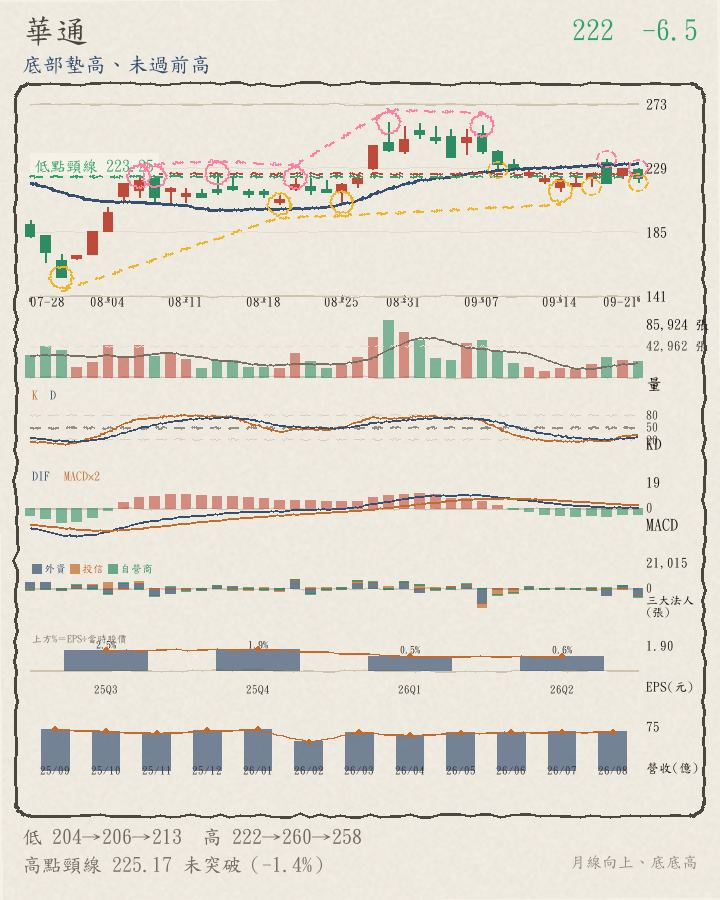
今天收黑、成交量也比平均少、跌破月線 231.95，離高點頸線 225.17 還差 1.4%，底部還在墊高（但高點沒同步創高）。
- 月線位置：收盤 222 在月線 231.95 之下；5 日線 222.5 也在月線之下（短均在下）；月線向上、5 日線走平或向下
- 量能：成交量是 20 日均量的 0.68 倍，比 20 日均量少很多
- 關鍵價位：高點頸線 225.17 還沒突破，差 1.4%；最近轉折高點 258（低於 14.0%）；最近轉折低點 213（高於 4.2%）
- 轉折結構：低點 204、205.5、213 墊高 4.4%（底底高），但高點 222、260、258 沒有同步創高；還沒確認的轉折低點 09-16 216、09-21 219；還沒確認的轉折高點 09-17 235、09-21 228.5（圖上虛線小圈）
剛突破前高 成交金額 47.66 億・全榜第 55 名（上市第 43 名）
好條件 7/8：站上月線、月線向上、頭頭高、突破頸線、相對大盤強、外資買超、量價攻擊（收紅＋大量）
不好條件 0/8：無
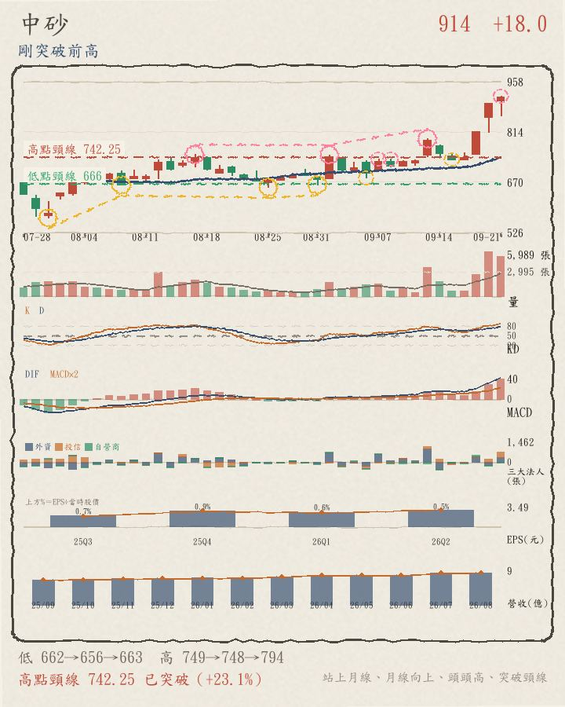
今天帶量收紅、站上月線 741.75，已站上高點頸線 742.25，高點還在墊高（但底部沒同步墊高）。
- 月線位置：收盤 914 在月線 741.75 之上；5 日線 820.2 也在月線之上（短均在上）；月線向上、5 日線向上
- 量能：成交量是 20 日均量的 3.66 倍，比 20 日均量大不少；收紅又量增，量價配合
- 關鍵價位：高點頸線 742.25 已站上；最近轉折高點 794（高於 15.1%）；最近轉折低點 663（高於 37.9%）
- 轉折結構：高點 749、748、794 墊高 15.4%（頭頭高），但低點 662、656、663 沒有同步墊高；還沒確認的轉折低點 09-04 683、09-15 735；還沒確認的轉折高點 09-08 736、09-21 916（圖上虛線小圈）
上升趨勢（底底高＋頭頭高） 成交金額 47.31 億・全榜第 57 名（上市第 44 名）
好條件 4/8：底底高、頭頭高、突破頸線、相對大盤強
不好條件 3/8：在月線之下、外資賣超、月線下彎
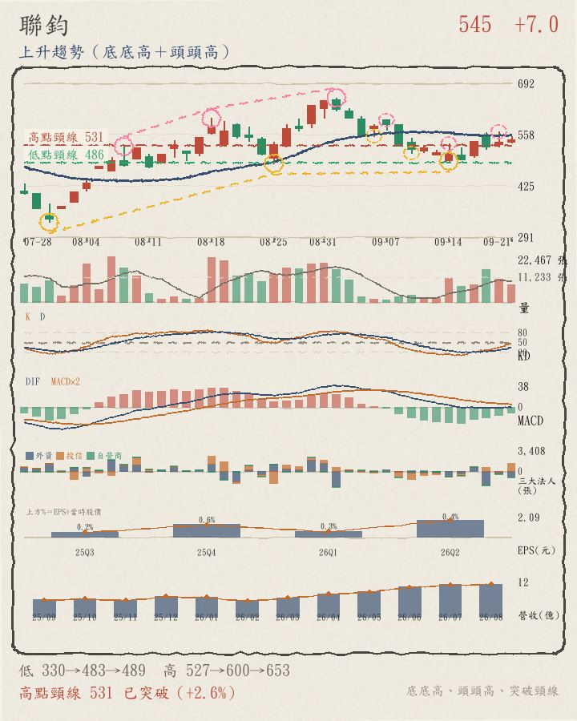
今天收紅、但成交量比平均少、跌破月線 557.225，已站上高點頸線 531，轉折結構仍是底底高＋頭頭高。
- 月線位置：收盤 545 在月線 557.225 之下；5 日線 528.3 也在月線之下（短均在下）；月線走平或向下、5 日線向上
- 量能：成交量是 20 日均量的 0.90 倍，比 20 日均量少一些；收紅但量縮，量價背離
- 關鍵價位：高點頸線 531 已站上；最近轉折高點 653（低於 16.5%）；最近轉折低點 489（高於 11.5%）
- 轉折結構：低點 330、483、489 一路墊高 48.2%、高點 527、600、653 也一路墊高 23.9%，是底底高＋頭頭高；還沒確認的轉折低點 09-04 554、09-09 510；還沒確認的轉折高點 09-14 535、09-18 565（圖上虛線小圈）
高點墊高、底部不穩 成交金額 46.81 億・全榜第 58 名（上市第 45 名）
好條件 4/8：月線向上、頭頭高、相對大盤強、外資買超
不好條件 1/8：在月線之下
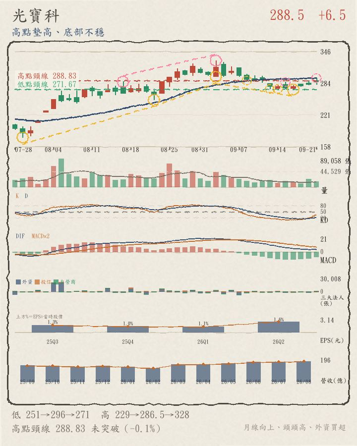
今天收紅、但成交量比平均少、跌破月線 293.825，離高點頸線 288.83 還差 0.1%，高點還在墊高（但底部沒同步墊高）。
- 月線位置：收盤 288.5 在月線 293.825 之下；5 日線 279.9 也在月線之下（短均在下）；月線向上、5 日線走平或向下
- 量能：成交量是 20 日均量的 0.57 倍，比 20 日均量少很多；收紅但量縮，量價背離
- 關鍵價位：高點頸線 288.83 還沒突破，差 0.1%；最近轉折高點 328（低於 12.0%）；最近轉折低點 271（高於 6.5%）
- 轉折結構：高點 229、286.5、328 墊高 43.2%（頭頭高），但低點 251、296.5、271 沒有同步墊高；還沒確認的轉折低點 09-11 272、09-14 272；還沒確認的轉折高點 09-15 286、09-21 294（圖上虛線小圈）
底部墊高、突破前高 成交金額 42.99 億・全榜第 60 名（上市第 46 名）
好條件 7/8：站上月線、月線向上、底底高、頭頭高、相對大盤強、外資買超、量價攻擊（收紅＋大量）
不好條件 0/8：無
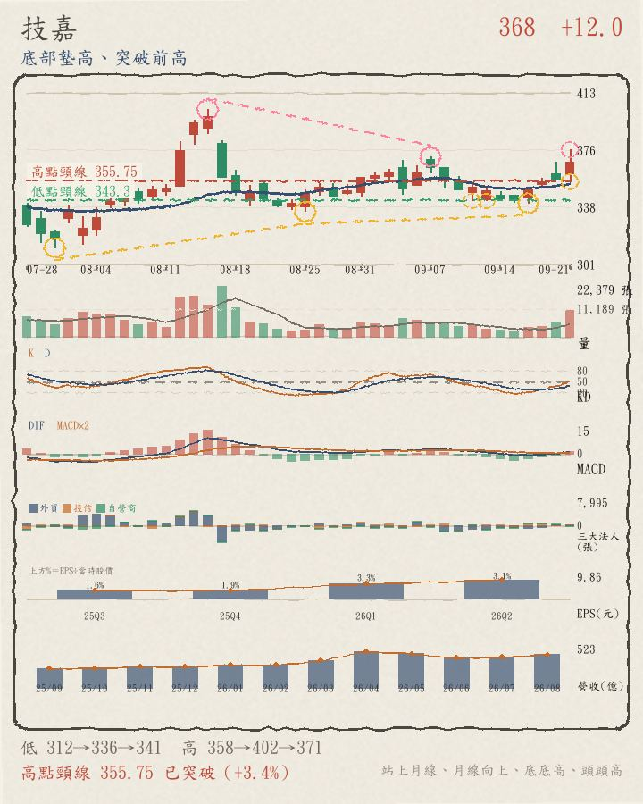
今天帶量收紅、站上月線 353.525，離高點頸線 373.5 還差 1.5%，轉折結構仍是底底高＋頭頭高。
- 月線位置：收盤 368 在月線 353.525 之上；5 日線 354.4 也在月線之上（短均在上）；月線向上、5 日線向上
- 量能：成交量是 20 日均量的 2.45 倍，比 20 日均量大不少；收紅又量增，量價配合
- 關鍵價位：高點頸線 373.5 還沒突破，差 1.5%；最近轉折高點 371（低於 0.8%）；最近轉折低點 341（高於 7.9%）
- 轉折結構：低點 312、335.5、341 一路墊高 9.3%、高點 358、402、371 也一路墊高 1.3%，是底底高＋頭頭高；還沒確認的轉折低點 09-11 342.5、09-21 355；還沒確認的轉折高點 09-21 376（圖上虛線小圈）
區間或轉弱 成交金額 41.97 億・全榜第 62 名（上市第 47 名）
好條件 1/8：月線向上
不好條件 4/8：今日下跌、相對大盤弱、在月線之下、外資賣超
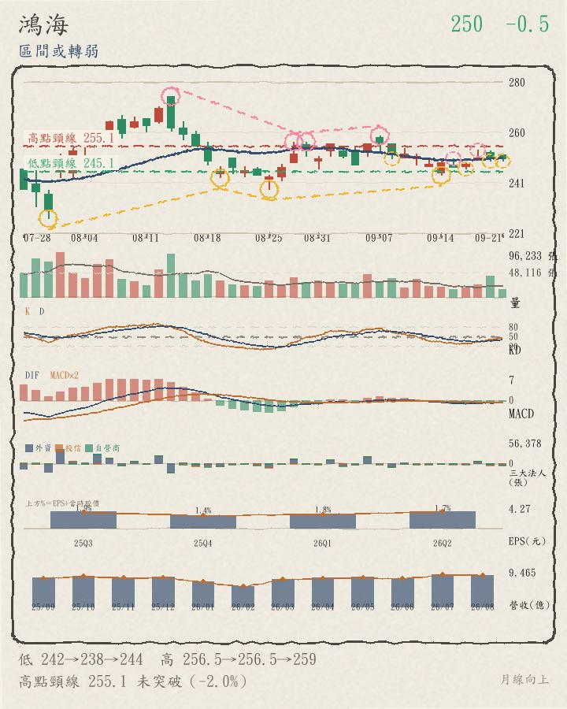
今天收黑、成交量也比平均少、跌破月線 250.375，離高點頸線 255.1 還差 2.0%，轉折還沒走出明顯方向。
- 月線位置：收盤 250 在月線 250.375 之下；5 日線 249.1 也在月線之下（短均在下）；月線向上、5 日線走平或向下
- 量能：成交量是 20 日均量的 0.56 倍，比 20 日均量少很多
- 關鍵價位：高點頸線 255.1 還沒突破，差 2.0%；最近轉折高點 259（低於 3.5%）；最近轉折低點 243.5（高於 2.7%）
- 轉折結構：低點 242.5、238、243.5 與高點 256.5、256.5、259 都沒有明顯遞增，屬於區間震盪或轉弱；還沒確認的轉折低點 09-18 249、09-21 249；還沒確認的轉折高點 09-15 250、09-17 253.5（圖上虛線小圈）
底部墊高、未過前高 成交金額 40.88 億・全榜第 65 名（上市第 48 名）
好條件 4/8：站上月線、月線向上、底底高、外資買超
不好條件 1/8：相對大盤弱
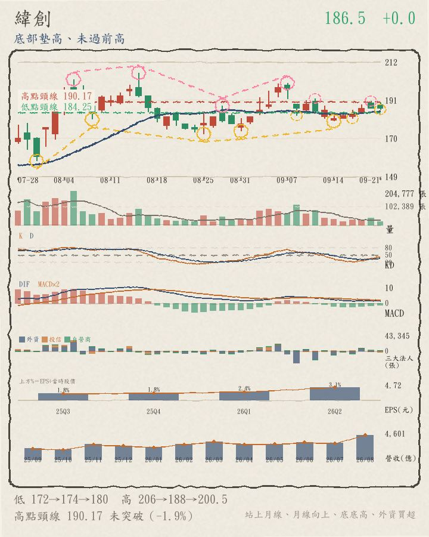
今天收黑、成交量也比平均少、站上月線 184.95，離高點頸線 190.17 還差 1.9%，底部還在墊高（但高點沒同步創高）。
- 月線位置：收盤 186.5 在月線 184.95 之上；5 日線 185 也在月線之上（短均在上）；月線向上、5 日線走平或向下
- 量能：成交量是 20 日均量的 0.40 倍，比 20 日均量少很多
- 關鍵價位：高點頸線 190.17 還沒突破，差 1.9%；最近轉折高點 200.5（低於 7.0%）；最近轉折低點 179.5（高於 3.9%）
- 轉折結構：低點 172.5、174、179.5 墊高 4.1%（底底高），但高點 206、188、200.5 沒有同步創高；還沒確認的轉折低點 09-16 181、09-21 186；還沒確認的轉折高點 09-10 192、09-18 190.5（圖上虛線小圈）
剛突破前高 成交金額 39.62 億・全榜第 66 名（上市第 49 名）
好條件 6/8：站上月線、月線向上、頭頭高、相對大盤強、外資買超、量價攻擊（收紅＋大量）
不好條件 0/8：無
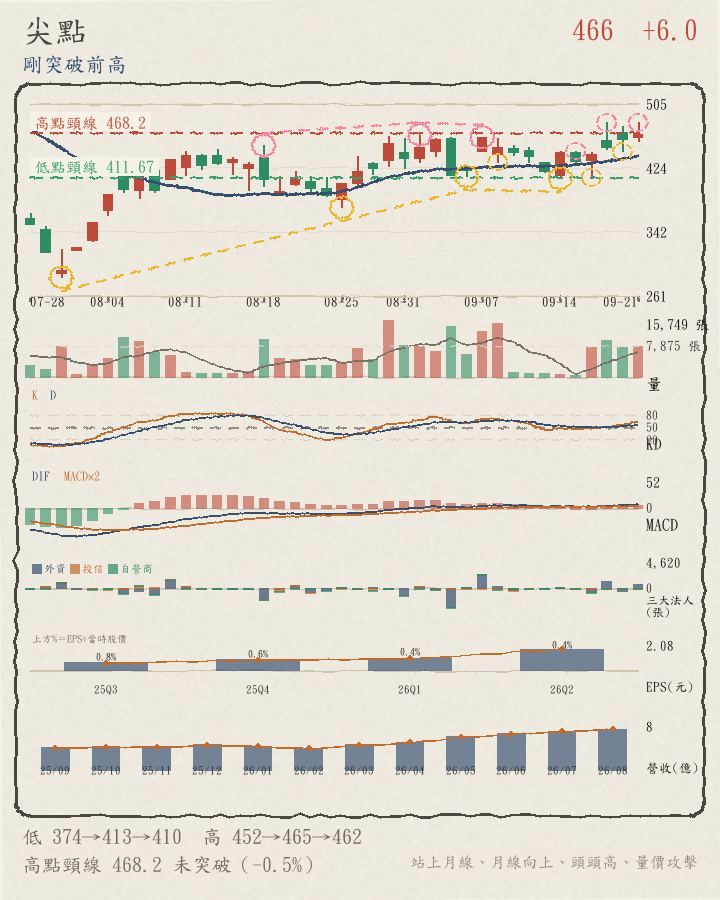
今天帶量收紅、站上月線 438.875，離高點頸線 481 還差 3.1%，高點還在墊高（但底部沒同步墊高）。
- 月線位置：收盤 466 在月線 438.875 之上；5 日線 449.5 也在月線之上（短均在上）；月線向上、5 日線向上
- 量能：成交量是 20 日均量的 1.22 倍，比 20 日均量大不少；收紅又量增，量價配合
- 關鍵價位：高點頸線 481 還沒突破，差 3.1%；最近轉折高點 462（高於 0.9%）；最近轉折低點 410.5（高於 13.5%）
- 轉折結構：高點 452、465、462 墊高 4.1%（頭頭高），但低點 373.5、413、410.5 沒有同步墊高；還沒確認的轉折低點 09-16 411.5、09-18 444；還沒確認的轉折高點 09-17 481、09-21 481（圖上虛線小圈）
高點墊高、底部不穩 成交金額 32.75 億・全榜第 70 名（上市第 50 名）
好條件 3/8：站上月線、月線向上、頭頭高
不好條件 3/8：今日下跌、相對大盤弱、外資賣超
今天收黑、成交量也比平均少、站上月線 155.175，離高點頸線 171.83 還差 2.2%，高點還在墊高（但底部沒同步墊高）。
- 月線位置：收盤 168 在月線 155.175 之上；5 日線 164.3 也在月線之上（短均在上）；月線向上、5 日線向上
- 量能：成交量是 20 日均量的 0.47 倍，比 20 日均量少很多
- 關鍵價位：高點頸線 171.83 還沒突破，差 2.2%；最近轉折高點 168（高於 0.0%）；最近轉折低點 146（高於 15.1%）
- 轉折結構：高點 152.5、161、168 墊高 10.2%（頭頭高），但低點 129.5、146、146 沒有同步墊高；還沒確認的轉折低點 09-09 150；還沒確認的轉折高點 09-17 174、09-21 173.5（圖上虛線小圈）
區間或轉弱 成交金額 155.67 億・全榜第 11 名（上櫃第 1 名）
好條件 4/8：站上月線、相對大盤強、外資買超、量價攻擊（收紅＋大量）
不好條件 1/8：月線下彎
今天帶量收紅、站上月線 1404.75，離高點頸線 1448.75 還差 0.9%，轉折還沒走出明顯方向。
- 月線位置：收盤 1435 在月線 1404.75 之上；5 日線 1382 也在月線之下（短均在下）；月線走平或向下、5 日線向上
- 量能：成交量是 20 日均量的 1.75 倍，比 20 日均量大不少；收紅又量增，量價配合
- 關鍵價位：高點頸線 1448.75 還沒突破，差 0.9%；最近轉折高點 1460（低於 1.7%）；最近轉折低點 1295（高於 10.8%）
- 轉折結構：低點 1455、1395、1295 與高點 1565、1430、1460 都沒有明顯遞增，屬於區間震盪或轉弱；還沒確認的轉折低點 09-14 1320、09-17 1275；還沒確認的轉折高點 09-17 1460、09-21 1445（圖上虛線小圈）
剛突破前高 成交金額 114.45 億・全榜第 20 名（上櫃第 2 名）
好條件 3/8：站上月線、月線向上、頭頭高
不好條件 3/8：今日下跌、相對大盤弱、外資賣超
今天收黑、成交量也比平均少、站上月線 453.025，離高點頸線 505.5 還差 3.0%，高點還在墊高（但底部沒同步墊高）。
- 月線位置：收盤 490.5 在月線 453.025 之上；5 日線 477.6 也在月線之上（短均在上）；月線向上、5 日線向上
- 量能：成交量是 20 日均量的 0.75 倍，比 20 日均量少很多
- 關鍵價位：高點頸線 505.5 還沒突破，差 3.0%；最近轉折高點 478（高於 2.6%）；最近轉折低點 420（高於 16.8%）
- 轉折結構：高點 492、492、478 墊高 6.1%（頭頭高），但低點 349.5、438.5、420 沒有同步墊高；還沒確認的轉折低點 09-08 440、09-18 467；還沒確認的轉折高點 09-17 507、09-21 504（圖上虛線小圈）
剛突破前高 成交金額 91.25 億・全榜第 25 名（上櫃第 3 名）
好條件 4/8：站上月線、月線向上、頭頭高、突破頸線
不好條件 3/8：今日下跌、相對大盤弱、外資賣超
今天收黑、成交量也比平均少、站上月線 192.175，已站上高點頸線 202.83，高點還在墊高（但底部沒同步墊高）。
- 月線位置：收盤 224 在月線 192.175 之上；5 日線 214 也在月線之上（短均在上）；月線向上、5 日線向上
- 量能：成交量是 20 日均量的 0.90 倍，比 20 日均量少一些
- 關鍵價位：高點頸線 202.83 已站上；最近轉折高點 203（高於 10.3%）；最近轉折低點 171（高於 31.0%）
- 轉折結構：高點 171、203、203 墊高 13.3%（頭頭高），但低點 155.5、152、171 沒有同步墊高；還沒確認的轉折高點 09-04 202.5、09-21 230（圖上虛線小圈）
剛突破前高 成交金額 91.16 億・全榜第 26 名（上櫃第 4 名）
好條件 4/8：站上月線、頭頭高、外資買超、量價攻擊（收紅＋大量）
不好條件 2/8：相對大盤弱、月線下彎
今天帶量收紅、站上月線 2065.25，離高點頸線 2190 還差 1.8%，高點還在墊高（但底部沒同步墊高）。
- 月線位置：收盤 2150 在月線 2065.25 之上；5 日線 2033 也在月線之下（短均在下）；月線走平或向下、5 日線向上
- 量能：成交量是 20 日均量的 1.17 倍，比 20 日均量大不少；收紅又量增，量價配合
- 關鍵價位：高點頸線 2190 還沒突破，差 1.8%；最近轉折高點 2160（低於 0.5%）；最近轉折低點 1900（高於 13.2%）
- 轉折結構：高點 2215、2195、2160 墊高 1.4%（頭頭高），但低點 1905、1970、1900 沒有同步墊高；還沒確認的轉折高點 09-21 2190（圖上虛線小圈）
區間或轉弱 成交金額 90.49 億・全榜第 28 名（上櫃第 5 名）
好條件 4/8：站上月線、月線向上、相對大盤強、量價攻擊（收紅＋大量）
不好條件 1/8：外資賣超
今天帶量收紅、站上月線 587.75，離高點頸線 633.75 還差 2.5%，轉折還沒走出明顯方向。
- 月線位置：收盤 618 在月線 587.75 之上；5 日線 568.2 也在月線之下（短均在下）；月線向上、5 日線走平或向下
- 量能：成交量是 20 日均量的 1.61 倍，比 20 日均量大不少；收紅又量增，量價配合
- 關鍵價位：高點頸線 633.75 還沒突破，差 2.5%；最近轉折高點 658（低於 6.1%）；最近轉折低點 501（高於 23.4%）
- 轉折結構：低點 495、572、501 與高點 654、635、658 都沒有明顯遞增，屬於區間震盪或轉弱；還沒確認的轉折低點 09-07 590、09-08 590；還沒確認的轉折高點 09-07 635、09-21 650（圖上虛線小圈）
區間或轉弱 成交金額 80.79 億・全榜第 33 名（上櫃第 6 名）
好條件 3/8：站上月線、月線向上、相對大盤強
不好條件 1/8：外資賣超
今天收紅、但成交量比平均少、站上月線 118.964，離高點頸線 126.75 還差 4.5%，轉折還沒走出明顯方向。
- 月線位置：收盤 121 在月線 118.964 之上；5 日線 117.1 也在月線之下（短均在下）；月線向上、5 日線走平或向下
- 量能：成交量是 20 日均量的 0.86 倍，比 20 日均量少一些；收紅但量縮，量價背離
- 關鍵價位：高點頸線 126.75 還沒突破，差 4.5%；最近轉折高點 135（低於 10.4%）；最近轉折低點 108.571（高於 11.4%）
- 轉折結構：低點 70.857、56.2856、108.571 與高點 95.1427、89.4284、135 都沒有明顯遞增，屬於區間震盪或轉弱；還沒確認的轉折低點 09-15 114.5、09-17 111；還沒確認的轉折高點 09-16 121.5、09-21 124.5（圖上虛線小圈）
底部墊高、未過前高 成交金額 75.02 億・全榜第 35 名（上櫃第 7 名）
好條件 1/8：底底高
不好條件 5/8：今日下跌、相對大盤弱、在月線之下、外資賣超、月線下彎
今天收黑、成交量也比平均少、跌破月線 3032.75，離高點頸線 2896.67 還差 0.7%，底部還在墊高（但高點沒同步創高）。
- 月線位置：收盤 2875 在月線 3032.75 之下；5 日線 2791 也在月線之下（短均在下）；月線走平或向下、5 日線走平或向下
- 量能：成交量是 20 日均量的 0.70 倍，比 20 日均量少很多
- 關鍵價位：高點頸線 2896.67 還沒突破，差 0.7%；最近轉折高點 2930（低於 1.9%）；最近轉折低點 2650（高於 8.5%）
- 轉折結構：低點 1335、1450、2650 墊高 98.5%（底底高），但高點 3065、3600、2930 沒有同步創高；還沒確認的轉折低點 09-04 2980；還沒確認的轉折高點 09-14 2830、09-17 2930（圖上虛線小圈）
高點墊高、底部不穩 成交金額 73.87 億・全榜第 36 名（上櫃第 8 名）
好條件 6/8：站上月線、月線向上、頭頭高、突破頸線、相對大盤強、量價攻擊（收紅＋大量）
不好條件 1/8：外資賣超
今天帶量收紅、站上月線 233.05，已站上高點頸線 239.83，高點還在墊高（但底部沒同步墊高）。
- 月線位置：收盤 284 在月線 233.05 之上；5 日線 248.2 也在月線之上（短均在上）；月線向上、5 日線向上
- 量能：成交量是 20 日均量的 3.23 倍，比 20 日均量大不少；收紅又量增，量價配合
- 關鍵價位：高點頸線 239.83 已站上；最近轉折高點 251.5（高於 12.9%）；最近轉折低點 220（高於 29.1%）
- 轉折結構：高點 238、239.5、251.5 墊高 5.7%（頭頭高），但低點 202、222.5、220 沒有同步墊高；還沒確認的轉折低點 09-04 224.5；還沒確認的轉折高點 09-08 242、09-21 284（圖上虛線小圈）
區間或轉弱 成交金額 62.44 億・全榜第 47 名（上櫃第 9 名）
好條件 0/8：無
不好條件 5/8：今日下跌、相對大盤弱、在月線之下、外資賣超、月線下彎
今天收黑、成交量也比平均少、跌破月線 943.9，離高點頸線 968 還差 3.8%，轉折還沒走出明顯方向。
- 月線位置：收盤 931 在月線 943.9 之下；5 日線 927.6 也在月線之下（短均在下）；月線走平或向下、5 日線向上
- 量能：成交量是 20 日均量的 0.81 倍，比 20 日均量少很多
- 關鍵價位：高點頸線 968 還沒突破，差 3.8%；最近轉折高點 1015（低於 8.3%）；最近轉折低點 872（高於 6.8%）
- 轉折結構：低點 931、875、872 與高點 1035、1015、1015 都沒有明顯遞增，屬於區間震盪或轉弱；還沒確認的轉折低點 09-08 944、09-18 901；還沒確認的轉折高點 09-15 959、09-17 977（圖上虛線小圈）
剛突破前高 成交金額 58.64 億・全榜第 50 名（上櫃第 10 名）
好條件 4/8：站上月線、月線向上、頭頭高、相對大盤強
不好條件 1/8：外資賣超
今天收紅、站上月線 1325.5，離高點頸線 1520 還差 0.0%，高點還在墊高（但底部沒同步墊高）。
- 月線位置：收盤 1520 在月線 1325.5 之上；5 日線 1401 也在月線之上（短均在上）；月線向上、5 日線向上
- 量能：成交量是 20 日均量的 0.97 倍，跟 20 日均量差不多
- 關鍵價位：高點頸線 1520 還沒突破，差 0.0%；最近轉折高點 1505（高於 1.0%）；最近轉折低點 1240（高於 22.6%）
- 轉折結構：高點 1080、1080、1505 墊高 2.0%（頭頭高），但低點 955、1300、1240 沒有同步墊高；還沒確認的轉折高點 09-10 1440、09-21 1535（圖上虛線小圈）
區間或轉弱 成交金額 56.07 億・全榜第 52 名（上櫃第 11 名）
好條件 2/8：站上月線、月線向上
不好條件 5/8：今日下跌、相對大盤弱、量增下跌（出貨）、外資賣超、收盤跌破前一日低點
今天帶量收黑、站上月線 5418，離高點頸線 5770 還差 4.8%，轉折還沒走出明顯方向。
- 月線位置：收盤 5495 在月線 5418 之上；5 日線 5567 也在月線之上（短均在上）；月線向上、5 日線走平或向下
- 量能：成交量是 20 日均量的 1.16 倍，比 20 日均量大不少；收黑卻量增，量價背離
- 關鍵價位：高點頸線 5770 還沒突破，差 4.8%；最近轉折高點 6060（低於 9.3%）；最近轉折低點 5365（高於 2.4%）
- 轉折結構：低點 5000、4730、5365 與高點 6815、5585、6060 都沒有明顯遞增，屬於區間震盪或轉弱；還沒確認的轉折低點 09-17 5485、09-21 5410；還沒確認的轉折高點 09-17 5860、09-21 5850（圖上虛線小圈）
區間或轉弱 成交金額 52.71 億・全榜第 53 名（上櫃第 12 名）
好條件 2/8：站上月線、月線向上
不好條件 3/8：今日下跌、相對大盤弱、外資賣超
今天收黑、站上月線 109.4，離高點頸線 118.25 還差 2.7%，轉折還沒走出明顯方向。
- 月線位置：收盤 115 在月線 109.4 之上；5 日線 111.8 也在月線之上（短均在上）；月線向上、5 日線向上
- 量能：成交量是 20 日均量的 0.97 倍，跟 20 日均量差不多
- 關鍵價位：高點頸線 118.25 還沒突破，差 2.7%；最近轉折高點 119（低於 3.4%）；最近轉折低點 100（高於 15.0%）
- 轉折結構：低點 103.5、104、100 與高點 131、117.5、119 都沒有明顯遞增，屬於區間震盪或轉弱；還沒確認的轉折低點 09-08 109；還沒確認的轉折高點 09-17 117.5、09-21 119（圖上虛線小圈）
高點墊高、底部不穩 成交金額 47.36 億・全榜第 56 名（上櫃第 13 名）
好條件 3/8：站上月線、月線向上、頭頭高
不好條件 4/8：今日下跌、相對大盤弱、量增下跌（出貨）、外資賣超
今天帶量收黑、站上月線 3237，高點還在墊高（但底部沒同步墊高）。
- 月線位置：收盤 3485 在月線 3237 之上；5 日線 3338 也在月線之上（短均在上）；月線向上、5 日線走平或向下
- 量能：成交量是 20 日均量的 1.55 倍，比 20 日均量大不少；收黑卻量增，量價背離
- 關鍵價位：最近轉折高點 3935（低於 11.4%）；最近轉折低點 2570（高於 35.6%）
- 轉折結構：高點 2975、3100、3935 墊高 32.3%（頭頭高），但低點 2400、2235、2570 沒有同步墊高；還沒確認的轉折低點 09-17 3165；還沒確認的轉折高點 09-21 3680（圖上虛線小圈）
剛突破前高 成交金額 44.24 億・全榜第 59 名（上櫃第 14 名）
好條件 6/8：站上月線、月線向上、頭頭高、突破頸線、相對大盤強、量價攻擊（收紅＋大量）
不好條件 1/8：外資賣超
今天帶量收紅、站上月線 104.445，已站上高點頸線 129.75，高點還在墊高（但底部沒同步墊高）。
- 月線位置：收盤 132.5 在月線 104.445 之上；5 日線 124.6 也在月線之上（短均在上）；月線向上、5 日線向上
- 量能：成交量是 20 日均量的 1.91 倍，比 20 日均量大不少；收紅又量增，量價配合
- 關鍵價位：高點頸線 129.75 已站上；最近轉折高點 98.9（高於 34.0%）；最近轉折低點 84.8（高於 56.2%）
- 轉折結構：高點 163、99.4、98.9 墊高 39.5%（頭頭高），但低點 82.5、81.8、84.8 沒有同步墊高；還沒確認的轉折低點 09-17 115；還沒確認的轉折高點 09-17 130、09-21 138（圖上虛線小圈）
高點墊高、底部不穩 成交金額 42.9 億・全榜第 61 名（上櫃第 15 名）
好條件 4/8：站上月線、月線向上、頭頭高、突破頸線
不好條件 3/8：今日下跌、相對大盤弱、外資賣超
今天收黑、成交量也比平均少、站上月線 421.4，已站上高點頸線 438，高點還在墊高（但底部沒同步墊高）。
- 月線位置：收盤 443 在月線 421.4 之上；5 日線 429.8 也在月線之上（短均在上）；月線向上、5 日線走平或向下
- 量能：成交量是 20 日均量的 0.79 倍，比 20 日均量少很多
- 關鍵價位：高點頸線 438 已站上；最近轉折高點 496（低於 10.7%）；最近轉折低點 407（高於 8.8%）
- 轉折結構：高點 328.5、431、496 墊高 51.0%（頭頭高），但低點 288、289、407 沒有同步墊高；還沒確認的轉折低點 09-18 418.5；還沒確認的轉折高點 09-17 445、09-21 456（圖上虛線小圈）
上升趨勢（底底高＋頭頭高） 成交金額 41.49 億・全榜第 63 名（上櫃第 16 名）
好條件 5/8：站上月線、月線向上、底底高、頭頭高、外資買超
不好條件 2/8：今日下跌、相對大盤弱
今天收黑、成交量也比平均少、站上月線 268.475，離高點頸線 321.5 還差 4.2%，轉折結構仍是底底高＋頭頭高。
- 月線位置：收盤 308 在月線 268.475 之上；5 日線 307 也在月線之上（短均在上）；月線向上、5 日線向上
- 量能：成交量是 20 日均量的 0.69 倍，比 20 日均量少很多
- 關鍵價位：高點頸線 321.5 還沒突破，差 4.2%；最近轉折高點 270.5（高於 13.9%）；最近轉折低點 265.5（高於 16.0%）
- 轉折結構：低點 189.5、190.5、265.5 一路墊高 40.1%、高點 178、230、270.5 也一路墊高 52.0%，是底底高＋頭頭高；還沒確認的轉折低點 09-14 272.5、09-17 295；還沒確認的轉折高點 09-17 325、09-21 318.5（圖上虛線小圈）
高點墊高、底部不穩 成交金額 41.11 億・全榜第 64 名（上櫃第 17 名）
好條件 2/8：月線向上、頭頭高
不好條件 6/8：跌破前低、今日下跌、相對大盤弱、在月線之下、量增下跌（出貨）、外資賣超
今天帶量收黑、跌破月線 35.118，高點還在墊高（但底部沒同步墊高）。
- 月線位置：收盤 29.05 在月線 35.118 之下；5 日線 30.46 也在月線之下（短均在下）；月線向上、5 日線走平或向下
- 量能：成交量是 20 日均量的 7.39 倍，比 20 日均量大不少；收黑卻量增，量價背離
- 關鍵價位：最近轉折高點 46.8（低於 37.9%）；最近轉折低點 30.8（低於 5.7%）
- 轉折結構：高點 18.0417、41.8、46.8 墊高 159.4%（頭頭高），但低點 15.4197、11.3543、30.8 沒有同步墊高；還沒確認的轉折低點 09-17 27.75、09-21 27.45；還沒確認的轉折高點 09-21 32.25（圖上虛線小圈）
區間或轉弱 成交金額 39.62 億・全榜第 67 名（上櫃第 18 名）
好條件 4/8：站上月線、相對大盤強、外資買超、量價攻擊（收紅＋大量）
不好條件 1/8：月線下彎
今天帶量收紅、站上月線 485.175，離高點頸線 517.6 還差 3.8%，轉折還沒走出明顯方向。
- 月線位置：收盤 498 在月線 485.175 之上；5 日線 449.8 也在月線之下（短均在下）；月線走平或向下、5 日線走平或向下
- 量能：成交量是 20 日均量的 1.76 倍，比 20 日均量大不少；收紅又量增，量價配合
- 關鍵價位：高點頸線 517.6 還沒突破，差 3.8%；最近轉折高點 520（低於 4.2%）；最近轉折低點 417（高於 19.4%）
- 轉折結構：低點 321、418.5、417 與高點 520、560、520 都沒有明顯遞增，屬於區間震盪或轉弱；還沒確認的轉折低點 09-04 470、09-08 467；還沒確認的轉折高點 09-07 520、09-21 508（圖上虛線小圈）
高點墊高、底部不穩 成交金額 35.07 億・全榜第 68 名（上櫃第 19 名）
好條件 4/8：站上月線、月線向上、頭頭高、量價攻擊（收紅＋大量）
不好條件 2/8：相對大盤弱、外資賣超
今天帶量收紅、站上月線 1376，離高點頸線 1717.5 還差 2.5%，高點還在墊高（但底部沒同步墊高）。
- 月線位置：收盤 1675 在月線 1376 之上；5 日線 1593 也在月線之上（短均在上）；月線向上、5 日線向上
- 量能：成交量是 20 日均量的 1.96 倍，比 20 日均量大不少；收紅又量增，量價配合
- 關鍵價位：高點頸線 1717.5 還沒突破，差 2.5%；最近轉折高點 1505（高於 11.3%）；最近轉折低點 1235（高於 35.6%）
- 轉折結構：高點 1250、1460、1505 墊高 20.4%（頭頭高），但低點 1050、1050、1235 沒有同步墊高；還沒確認的轉折低點 09-04 1335；還沒確認的轉折高點 09-17 1695、09-21 1740（圖上虛線小圈）
底部墊高、未過前高 成交金額 33.51 億・全榜第 69 名（上櫃第 20 名）
好條件 6/8：站上月線、月線向上、底底高、相對大盤強、外資買超、量價攻擊（收紅＋大量）
不好條件 0/8：無
今天帶量收紅、站上月線 375.5，離高點頸線 403.17 還差 3.9%，底部還在墊高（但高點沒同步創高）。
- 月線位置：收盤 387.5 在月線 375.5 之上；5 日線 369.4 也在月線之下（短均在下）；月線向上、5 日線向上
- 量能：成交量是 20 日均量的 1.70 倍，比 20 日均量大不少；收紅又量增，量價配合
- 關鍵價位：高點頸線 403.17 還沒突破，差 3.9%；最近轉折高點 414.5（低於 6.5%）；最近轉折低點 349（高於 11.0%）
- 轉折結構：低點 278.5、315.5、349 墊高 25.3%（底底高），但高點 398、419、414.5 沒有同步創高；還沒確認的轉折低點 09-17 360.5、09-21 331.5；還沒確認的轉折高點 09-17 379.5、09-21 397（圖上虛線小圈）